[Name of CES Director Removed],
Thank you for responding to my grandfather's request to answer my concerns and questions and for offering your time with me. I appreciate it.
I’m interested in your thoughts and answers as I have been unable to find official answers from the Church for most of these issues. I’m hoping you’re going to have better answers than many of the ones given by unofficial apologists such as FAIR and Neal A. Maxwell Institute (formerly FARMS).
I’m just going to be straightforward and blunt in sharing my concerns. Obviously I’m a disaffected member who lost his testimony so it’s no secret which side I’m on at the moment. All this information is a result of over a year of intense research and an absolute rabid obsession with Joseph Smith and Church history. With this said, I’d be pretty arrogant and ignorant to say that I have all the information and that you don’t have answers. Like you, I put my pants on one leg at a time and I see through a glass darkly. You may have new information and/or a new perspective that I may not have heard or considered before. This is why I’m genuinely interested in what your answers and thoughts are to these troubling problems.
I’ve decided to lay down just about all the major concerns that I have. I went through my notes from my past year of research and compiled them together. It doesn’t make sense for me to just lay down 5 concerns while I also have 20 other legitimate concerns that are keeping me from believing the truth claims of the LDS Church.
A quick background might be helpful as to where I'm coming from. I was a very active and fully believing member my entire life up until around the summer of 2012. My grandpa already outlined my life events to you in his email so I think you get the idea that I accepted and embraced Mormonism.
In February of 2012, I was reading the news online when I came across the following news article: Mormonism Besieged by the Modern Age. In the article was information about a Q&A meeting at Utah State University that LDS Church Historian and General Authority, Elder Marlin K. Jensen gave in late 2011. He was asked his thoughts regarding the effects of Google on membership and people who are "leaving in droves" over Church history.
Elder Marlin K. Jensen's response:
"Maybe since Kirtland, we've never had a period of – I'll call it apostasy, like we're having now; largely over these issues…"
This truly shocked me. I didn't understand what was going on or why people would leave "over history." I started doing research and reading books like LDS historian and scholar Richard Bushman’s Rough Stone Rolling and many others to try to better understand what was happening.
The following issues are among my main concerns:
Book of Mormon Concerns & Questions:
- What are 1769 King James Version edition errors doing in the Book of Mormon? An ancient text? Errors which are unique to the 1769 edition that Joseph Smith owned?
- When King James translators were translating the KJV Bible between 1604 and 1611, they would occasionally put in their own words into the text to make the English more readable. We know exactly what these words are because they're italicized in the KJV Bible. What are these 17th century italicized words doing in the Book of Mormon? Word for word? What does this say about the Book of Mormon being an ancient record?
Examples:
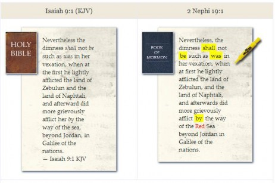The above example, 2 Nephi 19:1, dated in the Book of Mormon to be around 550 BC, quotes nearly verbatim from the 1611 AD translation of Isaiah 9:1 KJV – including the translators’ italicized words. Additionally, Joseph qualified the sea as the Red Sea. The problem with this is that (a) Christ quoted Isaiah in Matt. 4:14-15 and did not mention the Red Sea, (b) “Red” sea is not found in any source manuscripts, and (c) the Red Sea is 250 miles away.
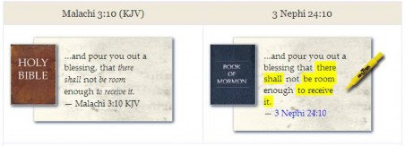In the above example, the KJV translators added 7 italicized words not found in the source Hebrew manuscripts to its English translation. Why does the Book of Mormon, completed 1,200 years prior, contain the exact identical seven italicized words of 17th century translators?
-
The Book of Mormon includes mistranslated biblical passages that were later changed in Joseph Smith’s translation of the Bible. These Book of Mormon verses should match the inspired JST version instead of the incorrect KJV version that Joseph later fixed. A typical example of the differences between the BOM, the KJV, and the JST:
25: …Therefore I say unto you, take no thought for your life, what ye shall eat, or what ye shall drink; nor yet for your body, what ye shall put on. Is not the life more than meat, and the body than raiment?
26: Behold the fowls of the air, for they sow not, neither do they reap nor gather into barns; yet your heavenly Father feedeth them. Are ye not much better than they?
27: Which of you by taking thought can add one cubit unto his stature?
Matthew 6:25-27 (from the King James Version Bible – not the JST):
25: Therefore I say unto you, Take no thought for your life, what ye shall eat, or what ye shall drink; nor yet for your body, what ye shall put on. Is not the life more than meat, and the body than raiment?
26: Behold the fowls of the air: for they sow not, neither do they reap, nor gather into barns; yet your heavenly Father feedeth them. Are ye not much better than they?
27: Which of you by taking thought can add one cubit unto his stature?
The above Sermon on the Mount passages are identical, which is understandable as Christ may have said the same thing to both groups of people in the Old world as well as the New world. Let’s look at the JST version of the above identical passages:
Joseph Smith Translation of the same passages in the LDS Bible for Matthew 6:25-27:
25: And, again, I say unto you, Go ye into the world, and care not for the world: for the world will hate you, and will persecute you, and will turn you out of their synagogues.
26: Nevertheless, ye shall go forth from house to house, teaching the people; and I will go before you.
27: And your heavenly Father will provide for you, whatsoever things ye need for food, what ye shall eat; and for raiment, what ye shall wear or put on.
Christ’s Sermon on the Mount in the Bible and the Book of Mormon are identical. Joseph Smith corrected the Bible. In doing so, he also corrected the same identical Sermon on the Mount passage in the Book of Mormon. The Book of Mormon is “the most correct book” and was translated a mere decade before the JST. The Book of Mormon was not corrupted over time and did not need correcting. How is it that the Book of Mormon has the incorrect Sermon on the Mount passage and does not match the correct JST version in the first place?
-
DNA analysis has concluded that Native American Indians do not originate from the Middle East or from Israelites but rather from Asia. Why did the Church change the following section of the introduction page in the 2006 edition Book of Mormon shortly after the DNA results were released?
“…the Lamanites, and they are the principal ancestors of the American Indians” to
“…the Lamanites, and they are among the ancestors of the American Indians”
- Anachronisms: Horses, cattle, oxen, sheep, swine, goats, elephants, wheels, chariots, wheat, silk, steel, and iron did not exist in pre-Columbian America during Book of Mormon times. Why are these things mentioned in the Book of Mormon as being made available in the Americas between 2200 BC - 421 AD?
-
Archaeology: There is absolutely no archaeological evidence to directly support the Book of Mormon or the Nephites/Lamanites who numbered in the millions. This is one of the reasons why unofficial apologists are coming up with the Limited Geography Model (it happened in Central or South America) and that the real Hill Cumorah is not in Palmyra, New York but is elsewhere and possibly somewhere down there instead. This is in direct contradiction to what Joseph Smith and other prophets have taught. Never mind that the Church has a visitor’s center there in New York and holds annual Hill Cumorah pageants.
We read about two major war battles that took place at the Hill Cumorah (Ramah to the Jaredites) that numbered in the deaths of at least 2,000,000 people. No bones, hair, chariots, swords, armor, or any other evidence found whatsoever.
Compare this to the Roman occupation of Britain and other countries. There are abundant evidences of their presence during the first 400 years AD such as villas, mosaic floors, public baths, armor, weapons, writings, art, pottery and so on. Even the major road systems used today in some of these occupied countries were built by the Romans. Additionally, there is ample evidence of the Mayan and Aztec civilizations as well as a civilization in current day Texas that dates back 15,000 years. Where are the Nephite or Lamanite buildings, roads, armors, swords, pottery, art, etc.?
Latter-day Saint Thomas Stuart Ferguson was BYU’s archaeology division (New World Archaeological Funding) founder. NWAF was financed by the Church. NWAF and Ferguson were tasked by BYU and the Church in the 1950s and 1960s to find archaeological evidence to support the Book of Mormon. This is what Ferguson wrote after 17 years of trying to dig up evidence for the Book of Mormon:
“…you can’t set Book of Mormon geography down anywhere – because it is fictional and will never meet the requirements of the dirt-archaeology. I should say – what is in the ground will never conform to what is in the book.”
-
Book of Mormon Geography: Many Book of Mormon names and places are strikingly similar to many local names and places of the region Joseph Smith lived.
The following two maps show Book of Mormon geography compared to Joseph Smith's geography:
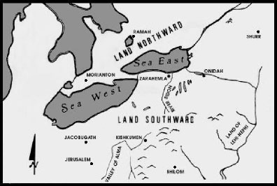Book of Mormon Geography
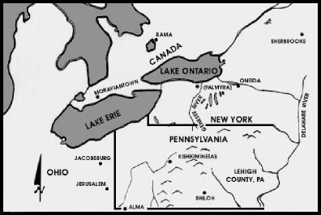Joseph Smith’s Geography
(Northeast United States & Southeast Canada)The first map is the "proposed map," constructed from internal comparisons in the Book of Mormon.
Throughout the Book of Mormon we read of such features as "The Narrow Neck of Land" which was a day and a half's journey (roughly 30 miles) separating two great seas. We read much of the Hill Onidah and the Hill Ramah – all place names in the land of Joseph Smith's youth.
We read in the Book of Mormon of the Land of Desolation named for a warrior named Teancum who helped General Moroni fight in the Land of Desolation. In Smith's era, an Indian Chief named Tecumseh fought and died near the narrow neck of land helping the British in the War of 1812. Today, the city Tecumseh (near the narrow neck of land) is named after him.
We see the Book of Mormon city Kishkumen located near an area named, on modern maps, as Kiskiminetas. There are more than a dozen Book of Mormon names that are the same as or nearly the same as modern geographical locations.
Actual Place Names Book of Mormon Place Names Alma Alma, Valley of Antrim Antum Antioch Ani-Anti Boaz Boaz Hellam Helam Jacobsburg Jacobugath Jerusalem Jerusalem Jordan Jordan Kishkiminetas Kishkumen Lehigh Lehi Mantua Manti Moraviantown Morianton Noah Lakes Noah, Land of Oneida Onidah Oneida Castle Onidah, Hill Rama Ramah Ripple Lake Ripliancum, Waters of Sodom Sidom Shiloh Shilom Sherbrooke Shurr Source: Book of Mormon Authorship: A Closer Look, Vernal Holley
Why are there so many names similar to Book of Mormon names in the region where Joseph Smith lived? This is all just a coincidence?
Hill Cumorah:
Off the eastern coast of Mozambique in Africa is an island country called “Comoros.” Prior to its French occupation in 1841, the islands were known by its Arabic name, “Camora.” There is an 1808 map of Africa that refers to the islands as “Camora.”
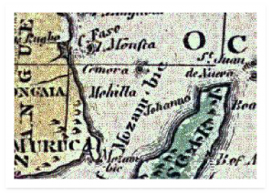
Camora is near center in the above 1808 Map of Africa
The largest city and capital of Comoros (formerly “Camora”)? Moroni. “Camora” and settlement “Moroni” were common names in pirate and treasure hunting stories involving Captain William Kidd (a pirate and treasure hunter) which many 19th century New Englanders – especially treasure hunters – were familiar with.
In fact, the uniform spelling for Hill Cumorah in the 1830 edition of the Book of Mormon is spelled as “Camorah.”
Pomeroy Tucker was born in Palmyra, New York in 1802, three years before Joseph Smith. He is considered to be a contemporary source. This is what he said about Joseph Smith:
"Joseph ... had learned to read comprehensively ... [reading] works of fiction and records of criminality, such for instance as would be classed with the 'dime novels' of the present day. The stories of Stephen Buroughs and Captain Kidd, and the like, presented the highest charms for his expanding mental perceptions."
– Mormonism: Its Origin, Rise, and Progress, p.17
Some apologists say that Tucker’s Mormonism: Its Origin, Rise, and Progress is anti-Mormon and thus anything in the book cannot be trusted. The problem with this premise is that LDS scholar and Church history compiler B.H. Roberts quoted Tucker for background information on Joseph and FairMormon has an article where they quoted Tucker 4 times from his book as support for Joseph and even referred to Tucker as an “eye witness” to Joseph and his family. Is Tucker’s peripheral information only useful and accurate when it shows Joseph and the Church in a positive and favorable light?
"We are sorry to observe, even in this enlightened age, so prevalent a disposition to credit the accounts of the marvellous. Even the frightful stories of money being hid under the surface of the earth, and enchanted by the Devil or Robert Kidd
(Captain Kidd), are received by many of our respectable fellow citizens as truths."
– Wayne Sentinel, Palmyra, New York, February 16, 1825
Notice that this is considered “prevalent” and “received by many of our respectable fellow citizens as truths.” The above contemporary 1825 Palmyra, New York newspaper quote was not tainted by any desire to damage Joseph Smith. This article provides a snapshot of the worldview of 1825 New England.
Hill Cumorah and Moroni have absolutely nothing to do with Camora and Moroni from Captain Kidd stories? Stories that Joseph and his treasure hunting family and buddies were familiar with? The original 1830 Book of Mormon uniform “Camorah” spelling? This is all just a mere coincidence?
-
There was a book published in 1825 Vermont entitled View of the Hebrews. View of the Hebrews compared to the Book of Mormon:
View of the Hebrews Online Source Book of Mormon Online Source Published
1823, first edition
1825, second edition
1830, first edition
Location
Vermont Poultney, Rutland County
Note: Oliver Cowdery, one of the Book of Mormon witnesses, lived in Poultney when “View of the Hebrews” was published.
Vermont Sharon, Windsor County
Note: Windsor County is adjacent to Rutland County.
The destruction of Jerusalem
√
√
The scattering of Israel
√
√
The restoration of the Ten Tribes
√
√
Hebrews leave the Old World for the New World
√
√
Religion a motivating factor
√
√
Migrations a long journey
√
√
Encounter "seas" of "many waters"
√
√
The Americas an uninhabited land
√
√
Settlers journey northward
√
√
Encounter a valley of a great river
√
√
A unity of race (Hebrew) settle the land and are the ancestral origin of American Indians
√
√
Hebrew the origin of Indian language
√
√
Egyptian hieroglyphics
√
√
Lost Indian records
√
A set of "yellow leaves" buried in Indian hill. Elder B.H. Roberts noted the "leaves" may be gold.
√
Joseph Smith claimed the gold plates were buried in Hill Cumorah.
Breastplate, Urim & Thummim
√
√
A man standing on a wall warning the people saying, “Wo, wo to this city…to this people” while subsequently being attacked.
√
Jesus, son of Ananus, stood on the wall saying “Wo, wo to this city, this temple, and this people.”
- Came to preach for many days
- Went upon a wall
- Cried with a loud voice
- Preached of destruction of Jerusalem
- Had stones cast at him Source: View of Hebrews, p.20
√
Samuel the Lamanite stood on the wall saying “Wo, wo to this city” or “this people”.
- Came to preach for many days
- Went upon a wall
- Cried with a loud voice
- Preached of destruction of Nephites
- Had stones cast at him Source: Helaman 13-16
Prophets, spiritually gifted men transmit generational records
√
√
The Gospel preached in the Americas
√
√
Quotes whole chapters of Isaiah
√
√
Good and bad are a necessary opposition
√
√
Pride denounced
√
√
Polygamy denounced
√
√
Sacred towers and high places
√
√
Messiah visits the Americas
√
Quetzalcoatl, the white bearded "Mexican Messiah"
√
Idolatry and human sacrifice
√
√
Hebrews divide into two classes, civilized and barbarous
√
√
Civilized thrive in art, written language, metallurgy, navigation
√
√
Government changes from monarchy to republic
√
√
Civil and ecclesiastical power is united in the same person
√
√
Long wars break out between the civilized and barbarous
√
√
Extensive military fortifications, observations, "watch towers"
√
√
Barbarous exterminate the civilized
√
√
Discusses the United States
√
√
Ethan/Ether
Elder B.H. Roberts noted: "Ethan is prominently connected with the recording of the matter in the one case, and Ether in the other."
Source: B.H. Roberts, Studies of the Book of Mormon, p.240-242,324-344
Reverend Ethan Smith was the author of View of the Hebrews. Ethan Smith was a pastor in Poultney, Vermont when he wrote and published the book. Oliver Cowdery – also a Poultney, Vermont resident – was a member of Ethan’s congregation during this time and before he went to New York to join his cousin (third cousins) Joseph Smith. As you know, Oliver Cowdery played an instrumental role in bringing forth the Book of Mormon.
LDS General Authority and scholar Elder B.H. Roberts privately researched the link between the Book of Mormon, the View of the Hebrews, Joseph’s father having the same dream in 1811 as Lehi’s dream, etc. that were available to Joseph Smith, Oliver Cowdery, Martin Harris and others before the publication of the Book of Mormon. Elder Roberts’ private research was meant only for the eyes of the First Presidency and the Quorum of the Twelve and was never intended to be
available to the public. Roberts’ work was later published in 1985 as Studies of the Book of Mormon. At the conclusion of his research, Elder B.H. Roberts came to the following conclusion:
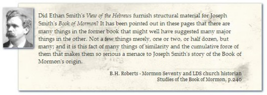
- The Late War Between the United States and Great Britain: This was an 1819 textbook written in King James Version style language for New York state school children, one of them very likely being Joseph Smith. The first chapter alone is stunning as it reads incredibly like the Book of Mormon:
-
Now it came to pass, in the one thousand eight hundred and twelfth year of the christian era, and in the thirty and sixth year after the people of the provinces of Columbia had declared themselves a free and independent nation;
-
That in the sixth month of the same year, on the first day of the month, the chief Governor, whom the people had chosen to rule over the land of Columbia;
-
Even James, whose sir-name was Madison, delivered a written paper to the Great Sannhedrim of the people, who were assembled together.
-
And the name of the city where the people were gathered together was called after the name of the chief captain of the land of Columbia, whose fame extendeth to the uttermost parts of the earth; albeit, he had slept with his fathers…
Along with the above KJV language style presence throughout the book, what are the following Book of Mormon phrases, verbatim, themes, and storylines doing in a children’s school textbook that was used in Joseph Smith’s own time and backyard? A mere decade before the publication of the Book of Mormon?
-
Devices of “curious workmanship” in relation to boats and weapons.
-
A “stripling” soldier “with his “weapon of war in his hand.”
-
“A certain chief captain…was given in trust a band of more than two thousand chosen men, to go forth to battle” and who “all gave their services freely for the good of their country.”
-
Fortifications: “the people began to fortify themselves and entrench the high Places round about the city.”
-
Objects made “partly of brass and partly of iron, and were cunningly contrived with curious works, like unto a clock; and as it were a large ball.”
-
“Their polished steels of fine workmanship.”
-
“Nevertheless, it was so that the freeman came to the defence of the city, built strong holds and forts and raised up fortifications in abundance.”
-
Three Indian Prophets.
-
“Rod of iron.”
-
War between the wicked and righteous.
-
Maintaining the standard of liberty with righteousness.
-
Righteous Indians vs. savage Indians.
-
False Indian prophets.
-
Conversion of Indians.
-
Bands of robbers/pirates marauding the righteous protagonists.
-
Brass plates.
-
“And it came to pass, that a great multitude flocked to the banners of the great Sanhedrim” compared to Alma 62:5: “And it came to pass that thousands did flock unto his standard, and did take up their swords in defense of their freedom…”
-
Worthiness of Christopher Columbus.
-
Ships crossing the ocean.
-
A battle at a fort where righteous white protagonists are attacked by an army made up of dark-skinned natives driven by a white military leader. White protagonists are prepared for battle and slaughter their opponents to such an extent that they fill the trenches surrounding the fort with dead bodies. The surviving elements flee into the wilderness/forest.
-
Cataclysmic earthquake followed by great darkness.
-
Elephants/mammoths in America.
-
Literary Hebraisms/Chiasmus.
-
Boats and barges built from trees after the fashion of the ark.
-
A bunch of “it came to pass”
-
Many, many more parallels.
-
- Another fascinating book published in 1809, The First Book of Napoleon, is shocking. The first chapter:
-
And behold it came to pass, in these latter days, that an evil spirit arose on the face of the earth, and greatly troubled the sons of men.
-
And this spirit seized upon, and spread amongst the people who dwell in the land of Gaul.
-
Now, in this people the fear of the Lord had not been for many generations, and they had become a corrupt and perverse people; and their chief priests,
and the nobles of the land, and the learned men thereof, had become wicked in the imagines of their hearts, and in the practices of their lives.
-
And the evil spirit went abroad amongst the people, and they raged like unto the heathen, and they rose up against their lawful king, and slew him, and his queen also, and the prince their son; yea, verily, with a cruel and bloody death.
-
And they moreover smote, with mighty wrath, the king’s guards, and
banished the priests, and nobles of the land, and seized upon, and took unto themselves, their inheritances, their gold and silver, corn and oil, and whatsoever belonged unto them.
-
Now it came to pass, that the nation of the Gauls continued to be sorely troubled and vexed, and the evil spirit whispered unto the people, even unto the meanest and vilest thereof…
…and it continues on. It’s like reading from the Book of Mormon.
When I first read this along with other passages from The First Book of Napoleon, I was floored. Here we have two early 19th century contemporary books written at least a decade before the Book of Mormon that not only read and sound like the Book of Mormon but which also carry so many of its parallels and themes as well.
The following are a side-by-side comparison of the beginning of The First Book of Napoleon
with the beginning of the Book of Mormon:
The First Book of Napoleon:
Condemn not the (writing)…an account…the First Book of Napoleon…upon the face of the earth…it came to pass…the land…their inheritances their gold and silver and…the commandments of the Lord…the foolish imaginations of their hearts…small in stature…Jerusalem…because of the perverse wickedness of the people.
Book of Mormon:
Condemn not the (writing)…an account…the First Book of Nephi…upon the face of the earth…it came to pass…the land…his inheritance and his gold and his silver and…the commandments of the Lord…the foolish imaginations of his heart…large in stature…Jerusalem…because of the wickedness of the people.
-
- The Book of Mormon taught and still teaches a Trinitarian view of the Godhead. Joseph Smith’s early theology also held this view. As part of the over 100,000 changes to the Book of Mormon, there were major changes made to reflect Joseph’s evolved view of the Godhead.
The staggering parallels and similarities to the Book of Mormon are astounding. This outstanding web page outlines very clearly and simply just how devastating the Late War is to the Book of Mormon and its claims.
Rick Grunder states in his paper:
“The presence of Hebraisms and other striking parallels in a popular children’s textbook (Late War), on the other hand – so close to Joseph Smith in his youth – must sober our perspective.” – p.770
Examples:
|
Original 1830 Edition Text |
Current, Altered Text |
|
And he said unto me, Behold, the virgin whom thou seest, is the mother of God, after the manner of the flesh. |
And he said unto me: Behold, the virgin whom thou seest is the mother of the Son of God, after the manner of the flesh. |
|
And the angel said unto me, behold the Lamb of God, yea, even the Eternal Father! |
And the angel said unto me: Behold the Lamb of God, yea, even the Son of the Eternal Father! |
|
And I looked and beheld the Lamb of God, that he was taken by the people; yea, the Everlasting God, was judged of the world; |
And I looked and beheld the Lamb of God, that he was taken by the people; yea, the Son of the everlasting God was judged of the world; |
|
These last records…shall make known to all kindreds, tongues, and people, that the Lamb of God is the Eternal Father and the Savior of the world; |
These last records…shall make known to all kindreds, tongues, and people, that the Lamb of God is the Son of the Eternal Father, and the Savior of the world; |
The following verses are among many verses still in the Book of Mormon that hold a Trinitarian view of the Godhead:
38: Now Zeezrom saith again unto him: Is the Son of God the very Eternal Father?
39: And Amulek said unto him: Yea, he is the very Eternal Father of heaven and of earth, and all things which in them are; he is the beginning and the end, the first and the last;
1: And now Abinadi said unto them: I would that ye should understand that God himself shall come down among the children of men, and shall redeem his people.
2: And because he dwelleth in flesh he shall be called the Son of God, and having subjected the flesh to the will of the Father, being the Father and the Son –
3: The Father, because he was conceived by the power of God; and the Son, because of the flesh; thus becoming the Father and Son –
4: And they are one God, yea, the very Eternal Father of heaven and of earth.
14: Behold, I am he who was prepared from the foundation of the world to redeem my people. Behold, I am Jesus Christ. I am the Father and the Son. In me shall all mankind have life, and that eternally, even they who shall believe on my name; and they shall become my sons and my daughters.
15: And never have I showed myself unto man whom I have created, for never has man
believed in me as thou hast. Seest thou that ye are created after mine own image? Yea, even all men were created in the beginning after mine own image.
(Emphasis added).
15: Teach them that redemption cometh through Christ the Lord, who is the very Eternal Father. Amen.”
LDS scholar, Boyd Kirkland, made the following observation:
“The Book of Mormon and early revelations of Joseph Smith do indeed vividly portray a picture of the Father and Son as the same God…why is it that the Book of Mormon not only doesn’t clear up questions about the Godhead which have raged in Christianity for centuries, but on the contrary just adds to the confusion? This seems particularly ironic, since a major avowed purpose of the book was to restore lost truths and end doctrinal controversies caused by the “great and abominable Church’s” corruption of the Bible…In later years he [Joseph] reversed his earlier efforts to completely ‘monotheise’ the godhead and instead ‘tritheised’ it.” – LDS scholar, Boyd Kirkland, “An Evolving God”
Assuming that the official 1838 First Vision account is truthful and accurate, why would Joseph Smith hold a Trinitarian view of the Godhead if he personally saw God the Father and Jesus Christ as separate and embodied beings a few years earlier in the Sacred Grove?
Book of Mormon Translation Concerns & Questions:
Unlike the story I've been taught in Sunday School, Priesthood, General Conferences, Seminary, EFY, Ensigns, Church history tour, Missionary Training Center, and BYU...Joseph Smith used a rock in a hat for translating the Book of Mormon.
In other words, he used the same "Ouija Board" that he used in his days treasure hunting where he would put in a rock – or a peep stone – in his hat and put his face in the hat to tell his customers the location of buried treasure. He used the exact same method while the gold plates were covered or put in another room or buried in the woods during translating the Book of Mormon. These facts are not only confirmed in Rough Stone Rolling (p. 71-72), by FairMormon here and here, by Neal A.Maxwell Institute (FARMS), but also in an obscure 1992 talk given by Elder Russell M. Nelson ofthe Quorum of the Twelve Apostles. The Church’s new December 2013 essay admits this.
Book of Mormon translation that the Church portrays to its members:
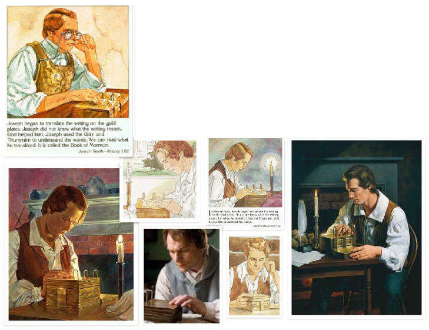
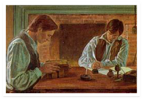
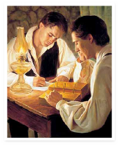
The above nine images are copyrighted by the Church of Jesus Christ of Latter-day Saints.
Click on each respective picture to be linked to its original source.
Book of Mormon translation as it actually happened:
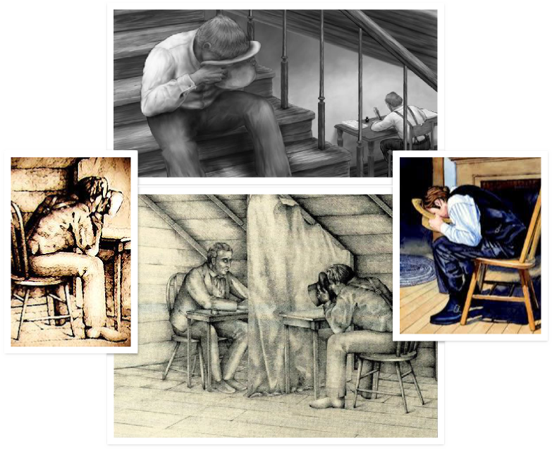
Why is the Church not being honest and transparent to its members about how Joseph Smith really translated the Book of Mormon? How am I supposed to be okay with this deception?
First Vision Concerns & Questions:
“Our whole strength rests on the validity of that [First] vision. It either occurred or it did not occur. If it did not, then this work is a fraud. If it did, then it is the most important and wonderful work under the heavens.”
– Gordon B. Hinckley, The Marvelous Foundation of Our Faith
- There are at least 4 different First Vision accounts by Joseph Smith:
- No one - including Joseph Smith's family members and the Saints – had ever heard about the First Vision for twelve to twenty-two years after it supposedly occurred. The first and earliest written account of the First Vision in Joseph Smith's journal was written 12 years after the spring of 1820. There is absolutely no record of a First Vision prior to 1832.
- In the 1832 account, Joseph said that before praying he knew that there was no true or living faith or denomination upon the earth as built by Jesus Christ in the New Testament. His primary purpose in going to prayer was to seek forgiveness of his sins.
- In the official 1838 account, Joseph said his "object in going to inquire of the Lord was to know which of all the sects was right, that I might know which to join"..."(for at this time it had never entered into my heart that all were wrong).”
This is in direct contradiction to his 1832 First Vision account.
- Other problems:
-
The dates / his ages: The 1832 account states Joseph was 15 years old when he had the vision in 1821 while the other accounts state he was 14 years old in 1820 when he had the vision.
-
The reason or motive for seeking divine help – Bible reading and conviction of sins, a revival, a desire to know if God exists, wanting to know which church to join – are not reported the same in each account.
-
Who appears to him – a spirit, an angel, two angels, Jesus, many angels, the Father and the Son – are all over the place.
-
The historical record shows that there was no revival in Palmyra in 1820. There was one in 1817 and there was another in 1824. There are records from his brother, William Smith, and his mother Lucy Mack Smith, both stating that the family joined Presbyterianism after Alvin's death in November 1823 despite Joseph Smith claiming in the official 1838 account that they joined in 1820; 3 years before Alvin Smith’s death.
-
Why did Joseph hold a Trinitarian view of the Godhead, as shown previously with the Book of Mormon, if he clearly saw that the Father and Son were separate embodied beings in the official First Vision?
-
Like the rock in the hat story, I did not know there were multiple First Vision accounts. I did not know its contradictions or that the Church members didn't know about a First Vision until 22 years after it supposedly happened. I was unaware of these omissions in the mission field as I was never taught or trained in the Missionary Training Center to teach investigators these facts.
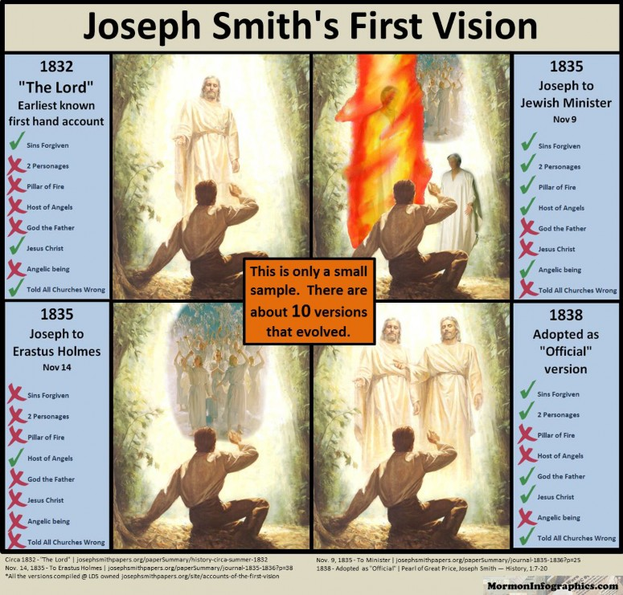
Book of Abraham Concerns & Questions:
- Despite Joseph’s claim that this record was written by Abraham “by his own hand, upon papyrus,” scholars have found the original papyrus Joseph translated and have dated it in 1st century CE, nearly 2,000 years after Abraham could have written it.
- Egyptologists have found the source material for the Book of Abraham to be nothing more than a common pagan Egyptian funerary text for a deceased man named “Hor” in 1st century CE. In other words, it was a common Breathing Permit that the Egyptians buried with their dead. It has absolutely nothing to do with Abraham or anything Joseph claimed in his translation for the Book of Abraham.
Facsimile 1:
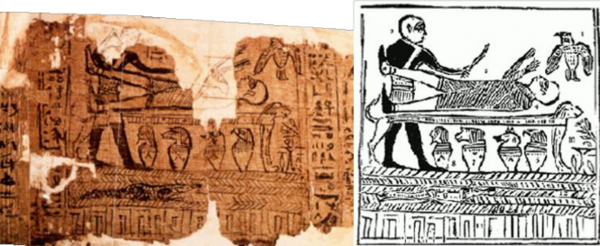
The bottom left shows the rediscovered papyrus and what was penciled in by Joseph Smith and his associates. The right is the final draft that’s included in the canonized Book of Abraham.
The following image is what Facsimile 1 is really supposed to look like, based on Egyptology and the same scene discovered elsewhere in Egypt:

The following is a side-by-side comparison of what Joseph Smith translated in Facsimile 1 versus what it actually says according to Egyptologists and modern Egyptology:
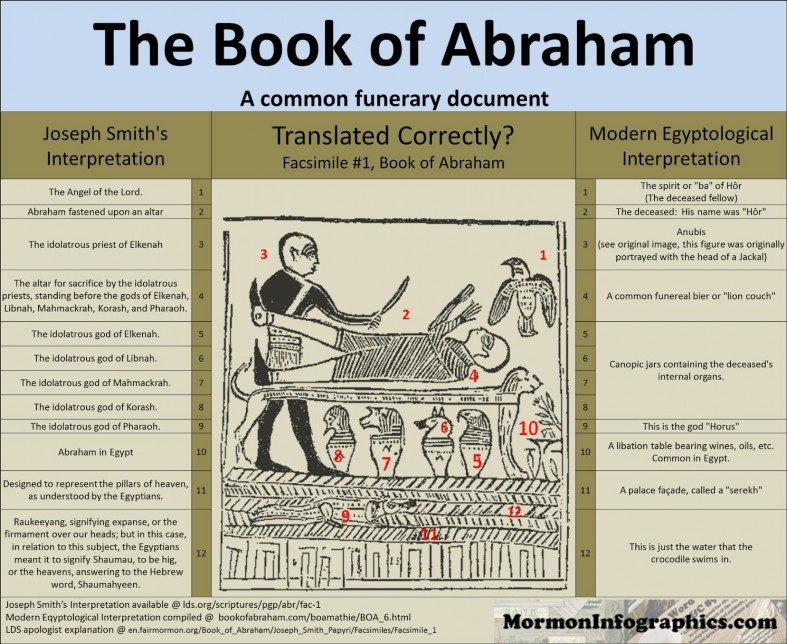
Figure #3 is supposed to be the jackal-headed Egyptian god of mummification and afterlife, Anubis; not a human. The following images show similar funerary scenes which have been discovered elsewhere in Egypt. Notice that the jackal-headed Egyptian god of death and afterlife Anubis is consistent in every funerary scene.
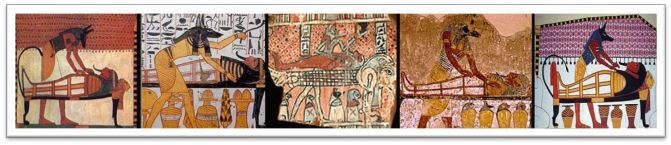
Facsimile 2:
The following is a side-by-side comparison of what Joseph Smith translated in Facsimile 2 versus what it actually says according to Egyptologists and modern Egyptology:
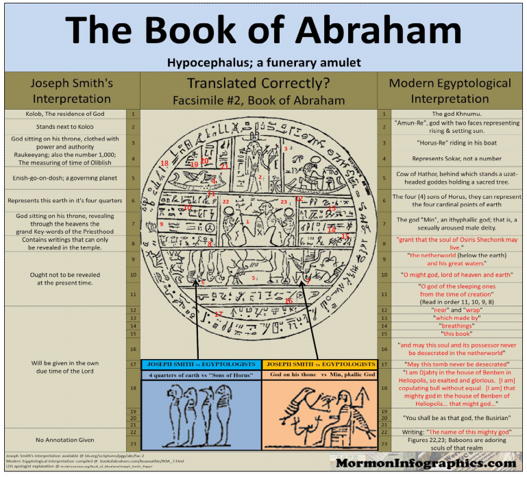
One of the most disturbing facts I discovered in my research of Facsimile 2 is figure #7. Joseph Smith said that this is “God sitting on his throne…” It’s actually Min, the pagan Egyptian god of fertility or sex. Min is sitting on a throne with an erect penis (which can be seen in the figure). In other words, Joseph Smith is saying that this figure with an erect penis is Heavenly Father sitting on His throne.
Facsimile 3:
The following is a side-by-side comparison of what Joseph Smith translated in Facsimile 3 versus what it actually says according to Egyptologists and modern Egyptology:
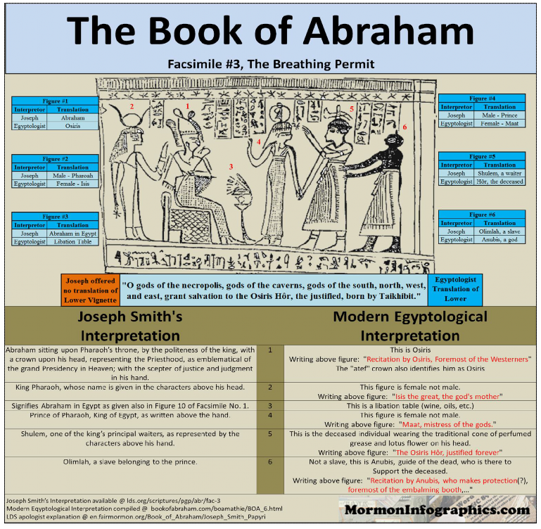
- Egyptologists state that Joseph Smith’s translation of the papyri and facsimiles are gibberish and have absolutely nothing to do with what the papyri and facsimiles actually are and what they actually say. Nothing in each and every facsimile is correct to what
Joseph Smith claimed they said.
-
Facsimile 1:
-
The names are wrong.
-
The Abraham scene is wrong.
-
He names gods that are not part of the Egyptian belief system; of any known mythology or belief system.
-
-
- Facsimile 2:
-
Joseph translated 11 figures on this facsimile. None of the names are correct as each one of these gods does not even exist in Egyptian religion or any recorded mythology.
-
Joseph misidentifies every god in this facsimile.
-
- Facsimile 3:
- Joseph misidentifies the Egyptian god Osiris as Abraham.
- Misidentifies the Egyptian god Isis as the Pharaoh.
- Misidentifies the Egyptian god Maat as the Prince of the Pharaoh.
- Misidentifies the Egyptian god Anubis as a slave.
- Misidentifies the dead Hor as a waiter.
- Joseph misidentifies – twice – a female as a male.
- The Book of Abraham teaches a Newtonian view of the universe. Its Newtonian astronomy concepts, mechanics, and models of the universe have been discredited by 20th century Einsteinian physics.
What we find in Abraham 3 and the official scriptures of the LDS Church regarding science reflects a Newtonian world concept. The Catholic Church's Ptolemaic cosmology was displaced by the new Copernican and Newtonian world model, just as the nineteenth-century, canonized, Newtonian world view is challenged by Einstein's twentieth-century science.
Keith Norman, an LDS scholar, has written that for the LDS Church, "It is no longer possible to pretend there is no conflict."
Norman continues: “Scientific cosmology began its leap forward just when Mormon doctrine was becoming stabilized. The revolution in twentieth-century physics precipitated by Einstein dethroned Newtonian physics as the ultimate explanation of the way the universe works. Relativity theory and quantum mechanics, combined with advances in astronomy, have established a vastly different picture of how the universe began, how it is structured and operates, and the nature of matter and energy. This new scientific cosmology poses a serious challenge to the Mormon version of the universe.”
Many of the astronomical and cosmological ideas found in both Joseph Smith's environment and in the Book of Abraham have become out of vogue, and some of these Newtonian concepts are scientific relics. The evidence suggests that the Book of Abraham reflects concepts of Joseph Smith's time and place rather than those of an ancient world. – Grant Palmer, An Insider’s View of Mormon Origins, p.25
- 86% of Book of Abraham chapters 2, 4, and 5 are King James Version Genesis chapters 1, 2, 11, and 12. Sixty-six out of seventy-seven verses are quotations or close paraphrases of King James Version wording. – An Insider’s View of Mormon Origins, p.19
The Book of Abraham is supposed to be an ancient text written thousands of years ago “by his own hand upon papyrus.” What are 17th century King James Version text doing in there? What does this say about the book being anciently written by Abraham?
- Why are there anachronisms in the Book of Abraham? Chaldeans? Egyptus? Pharaoh? Abraham refers to the facsimiles in 1:12 and 1:14. These facsimiles did not exist in Abraham’s time as they are 1st century CE pagan Egyptian funerary documents.
- Facsimile 2, Figure #5 states the sun receives its “light from the revolutions of Kolob.” We now know that the process of nuclear fusion is what makes the stars and suns shine. With the discovery of quantum mechanics, scientists learned that the sun’s source of energy is internal, and not external. The sun shines because of thermonuclear fusion; not because it gets its light from any other star as claimed by the Book of Abraham.
- There’s a book published in 1830 by Thomas Dick entitled The Philosophy of the Future State. Joseph Smith owned a copy of the book and Oliver Cowdery quoted some lengthy excerpts from the book in the December 1836 Messenger and Advocate.
Klaus Hansen, an LDS scholar, stated:
“The progressive aspect of Joseph’s theology, as well as its cosmology, while in a general way compatible with antebellum thought, bears some remarkable resemblances to Thomas Dick’s ‘Philosophy of a Future State’.”
Hansen continues:
“Some very striking parallels to Smith’s theology suggest that the similarities between the two may be more than coincidental. Dick’s lengthy book, an ambitious treatise on astronomy and metaphysics, proposed the idea that matter is eternal and indestructible and rejected the notion of a creation ex nihilo. Much of the book dealt with the infinity of the universe, made up of innumerable stars spread out over immeasurable distances. Dick speculated that many of these stars were peopled by “various orders of intelligences” and that these intelligences were “progressive beings” in various stages of evolution toward perfection. In the Book of Abraham, part of which consists of a treatise on astronomy and cosmology, eternal beings of various orders and stages of development likewise populate numerous stars. They,
too, are called “intelligences.” Dick speculated that “the systems of the universe revolve around a common centre…the throne of God.” In the Book of Abraham, one star named Kolob “was nearest unto the throne of God.” Other stars, in ever diminishing order, were placed in increasing distances from this center.”
– Mormonism and the American Experience, Klaus Hansen, p.79-80, 110
- Elder Jeffrey R. Holland was directly asked about the papyri not matching the Book of Abraham in a March 2012 BBC interview:
-
Sweeney: Mr. Smith got this papyri and he translated them and subsequently as the Egyptologists cracked the code something completely different…
-
Holland: (Interrupts) All I’m saying…all I’m saying is that what got translated got translated into the word of God. The vehicle for that, I do not understand and don’t claim to know and know no Egyptian.
-
Is “I don’t know and I don’t understand but it’s the word of God” really the best answer that a “prophet, seer, and revelator” can come up with to such a profound problem that is driving many members out of the Church?
The following are respected Egyptian scholars/Egyptologists statements regarding Joseph Smith and the Book of Abraham:
“…these three facsimiles of Egyptian documents in the Pearl of Great Price depict the most common objects in the Mortuary religion of Egypt. Joseph Smith’s interpretations of them as part of a unique revelation through Abraham, therefore, very clearly demonstrates that he was totally unacquainted with the significance of these documents and absolutely ignorant of the simplest facts of Egyptian writing and civilization.”
- Dr. James H. Breasted, University of Chicago
“It may be safely said that there is not one single word that is true in these explanations…”
- Dr. W.M. Flinders Petrie, London University
“It is difficult to deal seriously with Joseph Smith’s impudent fraud…Smith has turned the goddess [Isis in Facsimile #3] into a king and Osiris into Abraham.”
- Dr. A.H. Sayce, Oxford professor of Egyptology
The Church conceded in its July 2014 Translation and Historicity of the Book of Abraham essay that Joseph’s translations of the papyri and the facsimiles do not match what’s in the Book of Abraham.
Of all of the issues, the Book of Abraham is the issue that has both fascinated and disturbed me the most. It is the issue that I’ve spent the most time researching on because it offers a real insight into Joseph’s modus operandi as well as Joseph’s claim of being a translator. It is the smoking gun that has completely obliterated my testimony of Joseph Smith and his claims.
Polygamy/Polyandry Concerns & Questions:
One of the things that really disturbed me in my research was discovering the real origins of polygamy and how Joseph Smith really practiced it.
- Joseph Smith was married to at least 34 women.
- Polyandry: Of those 34 women, 11 of them were married women of other living men. Among them being Apostle Orson Hyde who was sent on his mission to dedicate Israel when Joseph secretly married his wife, Marinda Hyde. Church historian Elder Marlin K. Jensen and unofficial apologists like FairMormon do not dispute the polyandry.
- Out of the 34 women, 7 of them were teenage girls as young as 14-years-old. Joseph was 37-years-old when he married 14-year-old Helen Mar Kimball, twenty-three years his junior. Even by 19th century standards, this is pedophilia.
- Among the women was a mother-daughter set and three sister sets. Several of these women included Joseph's own foster daughters.
Some of the marriages to these women included promises by Joseph of eternal life to the girls and their families, threats of loss of salvation, and threats that he (Joseph) was going to be slain by an angel with a drawn sword if the girls didn't marry him.
I have a problem with this. This is Warren Jeffs territory. This is not the Joseph Smith I grew up learning about in the Church and having a testimony of. This is not the Joseph Smith that I sang “Praise to the Man” to or taught others about two years in the mission field.
A lot of members don’t realize that there is a set of very specific and bizarre rules outlined in Doctrine & Covenants 132 (still in LDS canon despite President Hinckley publicly stating that polygamy is not doctrinal) on how polygamy is to be practiced. It’s the kind of revelation you’d expect from the likes of Warren Jeffs to his FLDS followers.
The only form of polygamy permitted by D&C 132 is a union with a virgin after first giving the opportunity to the first wife to consent to the marriage. If the first wife doesn’t consent, the husband is exempt and may still take an additional wife, but the first wife must at least have the opportunity to consent. In case the first wife doesn’t consent, she will be “destroyed”. Also, the new wife must be a virgin before the marriage and be completely monogamous after the marriage or she will be destroyed (D&C 132: 41 & 63). It is interesting that the only prerequisite that is mentioned for the man is that he must desire another wife: “if any man espouse a virgin, and desire to espouse another…”. It does not say that the man must get a specific revelation from the living prophet, although we assume today that this is what was meant.
D&C 132 is unequivocal on the point that polygamy is permitted only “to multiply and replenish the earth” and “bear the souls of men.” This would be consistent with the Book of Mormon prohibition on polygamy except in the case where God commands it to “raise up seed.”
Again, looking at how polygamy was actually practiced by Joseph Smith:
- Joseph married 11 women who were already married. Multiple husbands = Polyandry.
- These married women continued to live as husband and wife with their first husband after marrying Joseph.
- Joseph’s polygamy also included:
-
Unions with teenagers as young as 14-years-old.
-
Unions without the knowledge or consent of first wife Emma.
-
Unions without the knowledge or consent of the husband, in cases of polyandry.
-
A union with Apostle Orson Hyde’s wife while he was on a mission (Marinda Hyde).
-
A union with a newlywed and pregnant woman (Zina Huntington).
-
Promises of salvation and exaltation for the girls’ entire families.
-
Threats that Joseph would be slain by an angel with a drawn sword if they did not enter into the union (Zina Huntington, Almera Woodard Johnson, Mary Lightner).
-
Threats of loss of salvation if the woman didn’t agree to the union with Joseph Smith.
-
Dishonesty in public sermons, 1835 D&C 101:4, denials by Joseph Smith denying he was a polygamist, Joseph’s destruction of the Nauvoo Expositor that exposed his polygamy and which printing press destruction started the chain of events that led to Joseph’s death.
-
Marriages to young girls living in Joseph’s home as foster daughters (Lawrence sisters, Partridge sisters, Fanny Alger, Lucy Walker).
-
Joseph’s marriage to Fanny Alger was described by Oliver Cowdery as a “dirty, nasty, filthy affair” – Rough Stone Rolling, p.323
-
Joseph was practicing polygamy before the sealing authority was given. LDS historian, Richard Bushman, states: “There is evidence that Joseph was a polygamist by 1835” – Rough Stone Rolling, p.323. Plural marriages are rooted in the notion of “sealing” for both time and eternity. The “sealing” power was not restored until April 3, 1836 when Elijah appeared to Joseph in the Kirtland Temple and conferred the sealing keys upon him. So, Joseph’s marriage to Fanny Alger in 1833 was illegal under both the laws of the land and under any theory of divine authority; it was adultery.
-
D&C 132:63 very clearly states that the only purpose of polygamy is to “multiply and replenish the earth” and “bear the souls of men.” Why did Joseph marry women who were already married?
These women were obviously not virgins, which violated D&C 132:61. Zina Huntington had been married seven and a half months and was about six months pregnant with her first husband’s baby at the time she married Joseph; clearly she didn’t need any more help to “bear the souls of men.”
Also, verse 63 states that if the new wives are with another man after the polygamous marriage, they will be destroyed. Eleven of Joseph’s wives lived with their first husbands after marrying Joseph Smith. Most of them lived on to old age. Why weren’t they “destroyed”?
How about the consent of the first wife, which receives so much attention in D&C 132? Emma was
unaware of most of Joseph’s plural marriages, at least until after the fact, which violated D&C 132.
I've been asked once by an LDS apologist if I would be okay with Joseph Smith's polygamy and polyandry if I received a witness that God really did command Joseph Smith to participate in these practices. The question is not if I would “be okay with” God commanding Joseph Smith to secretly steal other men’s wives and to marry teenage girls barely out of puberty. The question is “Do I believe that God did such a thing?” The answer, based on comparing D&C 132 to what actually happened, along with my personal belief that there is no such thing as an insane polygamist god who demanded such sadistic, immoral, adulterous, despicable, and pedophilic behavior while threatening Joseph’s life with one of his angels with a sword…is an emphatic and absolute “no.”
The secrecy of the marriages and the private and public denials by Joseph Smith are not congruent with honest behavior. Emma was unaware of most of these marriages. The Saints did not know what was going on behind the scenes as polygamy did not become common knowledge until 1852 when Brigham Young revealed it in Utah. Joseph Smith did everything he could to keep the practice in the dark. In fact, Joseph’s desire to keep this part of his life a secret is what ultimately contributed to his death when he ordered the destruction of the printing press (Nauvoo Expositor) that dared expose his behavior in June 1844. This event initiated a chain of events that led to Carthage.
Consider the following denial made by Joseph Smith to Latter-day Saints in Nauvoo in May 1844 – a month before his death:
"...What a thing it is for a man to be accused of committing adultery, and having seven wives, when I can only find one. I am the same man, and as innocent as I was fourteen years ago; and I can prove them all perjurers." – History of the Church, Vol. 6, Chapter 19, p. 411
It is a matter of historical fact that Joseph had secretly taken over 30 plural wives by May 1844 when he made the above denial that he was ever a polygamist.
If you go to Familysearch.org – an LDS-owned genealogy website – you can clearly see that Joseph Smith had many wives. The facts speak for themselves – from 100% LDS sources – that Joseph Smith was dishonest.
The following 1835 edition of Doctrine & Covenants revelations bans polygamy: 1835 Doctrine & Covenants 101:4:
“Inasmuch as this Church of Christ has been reproached with the crime of fornication, and polygamy: we declare that we believe, that one man should have one wife; and one woman, but one husband, except in case of death, when either is at liberty to marry again.”
1835 Doctrine & Covenants 13:7:
“Thou shalt love thy wife with all thy heart, and shall cleave unto her and none else.”
1835 Doctrine & Covenants 65:3:
“Wherefore, it is lawful that he should have one wife, and they twain shall be one flesh, and all this that the earth might answer the end of its creation.”
Joseph Smith was already a polygamist when these revelations were introduced into the 1835 edition of the Doctrine & Covenants and Joseph publicly taught that the doctrine of the Church was monogamy. Joseph continued secretly marrying multiple women as these revelations/scriptures remained in force.
In an attempt to influence and abate public rumors of his secret polygamy, Joseph got 31 witnesses to sign an affidavit published in the LDS October 1, 1842 Times and Seasons stating that Joseph did not practice polygamy. Pointing to the above-mentioned D&C 101:4 scripture, these witnesses claimed the following:
“…we know of no other rule or system of marriage than the one published in the Book of Doctrine and Covenants.”
The problem with this affidavit is that it was signed by several people who were secret polygamists or who knew that Joseph was a polygamist at the time they signed the affidavit. In fact, Eliza R. Snow, one of the signers of this affidavit, was Joseph Smith’s plural wife. Joseph and Eliza were married 3 months earlier on June 29, 1842. Two Apostles and future prophets, John Taylor and Wilford Woodruff, were very aware of Joseph’s polygamy behind the scenes when they signed. Another signer, Bishop Whitney, had personally married his daughter Sarah Ann Whitney to Joseph as a plural wife a few months earlier on July 27, 1842; Whitney’s wife and Sarah’s mother Elizabeth (also a signer) witnessed the ceremony.
What does it say about Joseph Smith and his character to include his plural wife and buddies – who knew about his secret polygamy/polyandry – to lie and perjure in a sworn public affidavit that Joseph was not a polygamist?
Now, does the fact that Joseph Smith practiced polygamy and polyandry while lying to Emma, the Saints, and the world about it over the course of 10+ years prove that he was a false prophet? That the Church is false? No, it doesn't.
What it does prove, however, is that Joseph Smith’s pattern of behavior or modus operandi for a period of at least 10 years of his adult life was to keep secrets, be deceptive, and be dishonest – both privately and publicly.
It's when you take this snapshot of Joseph’s character and start looking into the Book of Abraham, the Kinderhook Plates, the Book of Mormon, the multiple First Vision accounts, Priesthood restoration, and so on that you start to see a very disturbing pattern and picture.
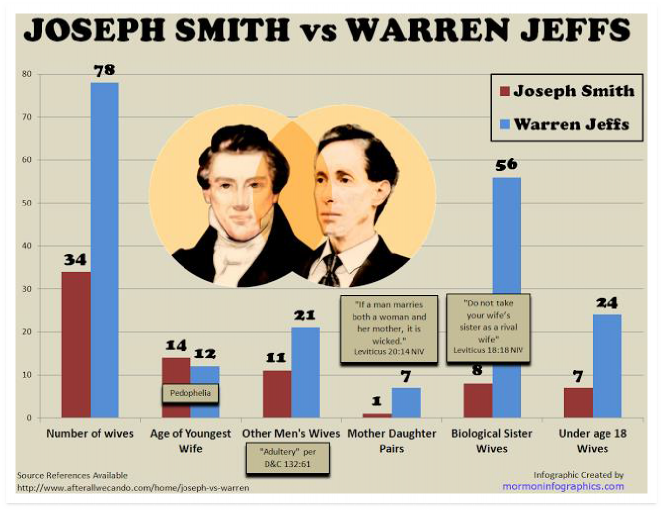
Warren Jeffs is more closely aligned to Joseph Smith Mormonism than the LDS Church is.
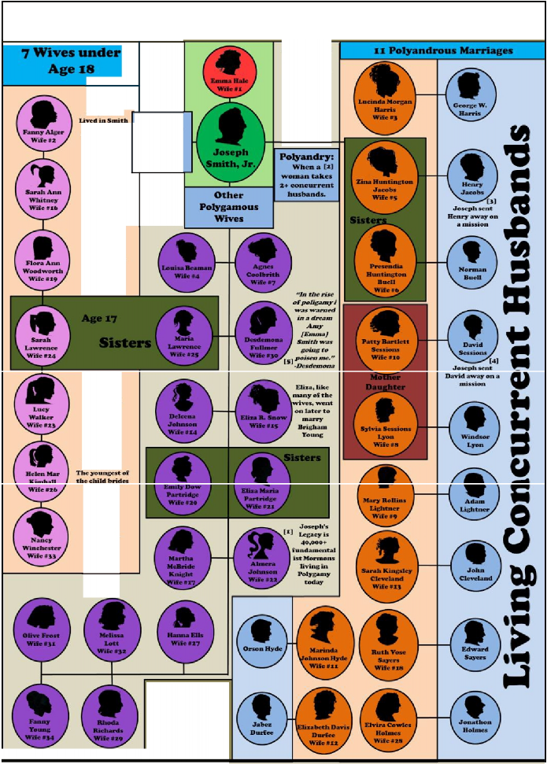
The Many Wives ol Joseph Satitb
Joseph and Emma Married in Jan I8:.t7
(1] "Utah Struggles With a Revival of Polygamy", NY Times, 8/23/1998, James Brooke (2] Polyandry Definition: http://en.wikipedia.org/wiki/Polyandry
- "Zina and Her Men", FAIR LOS Conference, 2006
- David Sessions mission call, wivesof josephsmith.org, Patty Bartlett Sessions Biography
(SJ 0. Fullmer quote, wivesofjosephsmith. org, 0. Fullmer Bio Marriage Details from: wivesofjosophsmith.org
Prophets Concerns & Questions:
- Adam-God: President Brigham Young taught what is now known as "Adam-God
theory.” He taught that Adam is "our Father and our God, and the only God with whom we have to do.” Young not only taught this doctrine over the pulpit at the 1852 and 1854 General Conferences but he also introduced this doctrine as the Lecture at the Veil in the endowment ceremony of the Temple.
Prophets and apostles after Young renounced Adam-God theory as false doctrine. President Spencer W. Kimball renounced Adam-God theory in the October 1976 Conference:
“We warn you against the dissemination of doctrines which are not according to the scriptures and which are alleged to have been taught by some of the General Authorities of past generations. Such, for instance, is the Adam-God theory. We denounce that theory and hope that everyone will be cautioned against this and other kinds of false doctrine.” – President Spencer W. Kimball, Our Own Liahona
Along with President Spencer W. Kimball and similar statements from others, Bruce R. McConkie made the following statement:
"The devil keeps this heresy alive as a means of obtaining converts to cultism. It is contrary to the whole plan of salvation set forth in the scriptures, and anyone who has read the Book of Moses, and anyone who has received the temple endowment, has no excuse whatever for being led astray by it. Those who are so ensnared reject the living prophet and close their ears to the apostles of their day.” – Bruce R. McConkie, The Seven Deadly Heresies
Ironically, McConkie’s June 1980 condemnation asks you to trust him and Kimball as today’s living prophet. Further, McConkie is pointing to the endowment ceremony as a source of factual information. What about the Saints of Brigham’s day who were following their living prophet? And what about the endowment ceremony of their day where Adam-God was being taught at the veil?
Yesterday's doctrine is today's false doctrine and yesterday's prophet is today's heretic.
- Blood Atonement: Along with Adam-God, Young taught a doctrine known as "Blood Atonement" where a person's blood had to be shed to atone for their own sins as it was beyond the atonement of Jesus Christ.
“There are sins that men commit for which they cannot receive forgiveness in this world, or in that which is to come, and if they had their eyes open to see their true condition, they would be perfectly willing to have their blood spilt upon the ground, that the smoke thereof might ascend to heaven as an offering for their sins; and the smoking incense would atone for their sins, whereas, if
such is not the case, they will stick to them and remain upon them in the spirit world.
I know, when you hear my brethren telling about cutting people off from the earth, that you consider it is strong doctrine; but it is to save them, not to destroy them…
And furthermore, I know that there are transgressors, who, if they knew themselves, and the only condition upon which they can obtain forgiveness, would beg of their brethren to shed their blood, that the smoke thereof might ascend to God as an offering to appease the wrath that is kindled against them, and that the law might have its course. I will say further;
I have had men come to me and offer their lives to atone for their sins.
It is true that the blood of the Son of God was shed for sins through the fall and those committed by men, yet men can commit sins which it can never remit.... There are sins that can be atoned for by an offering upon an altar, as in ancient days; and there are sins that the blood of a lamb, or a calf, or of turtle dove, cannot remit, but they must be atoned for by the blood of the man.”
– Journal of Discourses, Vol. 4, p. 53-54
The doctrine was later declared false by future prophets and apostles. Yesterday's doctrine is today's false doctrine. Yesterday’s prophet is today’s heretic.
- Polygamy: Brigham Young taught the doctrine that polygamy is required for exaltation: "The only men who become Gods, even the Sons of God, are those who enter
into polygamy." – Journal of Discourses 11:269
Several other prophets after Young, including Taylor, Woodruff, Snow, and Joseph F. Smith gave similar teachings that the New and Everlasting Covenant of plural marriage was doctrinal and essential for exaltation.
It’s even in the scriptures. Doctrine & Covenants 132:4:
“For behold, I reveal unto you a new and an everlasting covenant; and if ye abide not that covenant, then are ye damned; for no one can reject this covenant and be permitted to enter into my glory.”
In a September 1998 Larry King Live interview (14:37), Hinckley was asked about polygamy:
-
Larry King: You condemn it [polygamy]?
-
Hinckley: I condemn it. Yes, as a practice, because I think it is not doctrinal.
We still have Doctrine & Covenants 132 canonized. We're still practicing plural marriage in the Temples. Apostles Elder Oaks and Elder Nelson are modern examples of LDS
polygamists in that they're sealed to multiple women.
Polygamy is doctrinal. Polygamy is not doctrinal. Yesterday's doctrine is today's false doctrine. Yesterday's prophets are today's heretics.
-
- Blacks Ban: As you know, for close to 130 years blacks were not only banned from holding the priesthood but black individuals and families were blocked from the saving ordinances of the Temple. Every single prophet from Brigham Young all the way to Harold
B. Lee kept this ban in place.
Prophets, Seers, and Revelators of 2013 – in its Race and the Priesthood essay – disavowed the “theories” of yesterday’s Prophets, Seers, and Revelators for their theological, institutional, and doctrinal racist teachings and “revelation”. Yesterday’s racist doctrine and revelation is today’s “disavowed theories”.
Joseph Smith permitted the priesthood to at least two black men. Elijah Abel was one of them. Walker Lewis was another.
So, Joseph Smith gives the priesthood to blacks. Brigham Young bans blacks. Each and every single one of the 10 prophets from Brigham Young to Harold B. Lee supported what Spencer W. Kimball referred to as a "possible error" (Teachings of Spencer W. Kimball, p. 448-449).
Heavenly Father likes blacks enough to give them the priesthood under Joseph Smith but He decides they're not okay when Brigham Young shows up. And He still doesn't think they're okay for the next 130 years and the next 9 prophets until President Kimball decides to get a revelation.
The same God who "denieth none that come unto him, black and white, bond and free, male and female" is the same God who denied blacks from the saving ordinances of the Temple for 130 years. Yet, He changed His mind again in 1978 about black people. Of course, the revelation He gives to the Brethren in the Salt Lake Temple on June 1, 1978 has absolutely nothing to do with Jimmy Carter's IRS potentially revoking the Church’s and BYU’s tax-exempt status, Stanford and other universities boycotting BYU athletics, we can't figure out who’s black or not in Brazil, and that post-Civil Rights societal trends were against the Church's racism. Christ’s true Church should have been the one leading the Civil Rights movement, not be the last major Church on the planet in 1978 to adopt it.
As a believing member, I had no idea that Joseph Smith gave the priesthood to black men. I’m supposed to go to the drawing board now and believe in a god who is not only a schizophrenic racist but who is inconsistent as well?
Yesterday's doctrine is today's false doctrine. Yesterday's 10 prophets are today's heretics.
- Mark Hofmann:
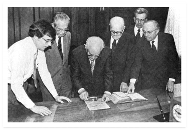
-
In the early to mid-1980s, the Church shelled out close to $900,000 in antiquities and cash to Mark Hofmann – a conman and soon-to-be serial killer – to purchase and suppress bizarre and embarrassing documents into the Church vaults that undermined and threatened the Church’s story of its origins. The documents were later proven to be forgeries.
-
Lack of discernment by the Brethren on such a grave threat to the Church.
-
Speeches by Dallin H. Oaks and Gordon B. Hinckley offering apologetic explanations for troubling documents (Salamander Letter and Joseph Smith III Blessing) that later ended up, unbeknownst to Oaks and Hinckley at the time of their apologetic talks, being proven complete fakes and forgeries.
-
The following is Oaks’ 1985 defense of the fake Salamander letter (which Oaks evidently thought was real and legitimate at the time):
“Another source of differences in the accounts of different witnesses is the different meanings that different persons attach to words. We have a vivid illustration of this in the recent media excitement about the word salamander in a letter Martin Harris is supposed to have sent to W. W. Phelps over 150 years ago. All of the scores of media stories on that subject apparently assume that the author of that letter used the word salamander in the modern sense of a ‘tailed amphibian.’
One wonders why so many writers neglected to reveal to their readers that there is another meaning of salamander, which may even have been the primary meaning in this context in the 1820s. That meaning, which is listed second in a current edition of Webster’s New World Dictionary, is ‘a spirit supposed to live in fire’ (2d College ed. 1982, s.v. ‘salamander’). Modern and ancient literature contain many examples of this usage.
A spirit that is able to live in fire is a good approximation of the description Joseph Smith gave of the angel Moroni: a personage in the midst of a light, whose countenance was “truly like lightning” and whose overall appearance “was glorious beyond description” (Joseph Smith-History 1:32). As Joseph Smith wrote later, “The first sight [of this personage] was as though the house was filled with consuming fire” (History of the Church, 4:536). Since the letter purports only to be Martin Harris’s interpretation of what he had heard about Joseph’s experience, the use of the words white salamander and old spirit seem understandable.
In view of all this, and as a matter of intellectual evaluation, why all the excitement in the media, and why the apparent hand-wringing among those who profess friendship with or membership in the Church? The media should make more complete disclosures, but Latter-day Saint readers should also be more sophisticated in their evaluation of what they read.”
So, what just happened? Oaks defended and rationalized a completely fake and made up document that Mark Hofmann created while telling “Latter-day Saint readers” to be “more sophisticated in their evaluation of what they read.”
- Dishonesty by Hinckley on his relationship with Hofmann, his meetings, and which documents that the Church had and didn’t have.
- The Church was forced to produce, albeit reluctantly, documents that it had previously denied existed after Hofmann leaked to the media that he sold the documents to the Church.
- While these “prophets, seers, and revelators” were being duped and conned by Mark Hofmann’s forgeries, the Tanners – considered some of the biggest enemies of the Church – actually came out and said that the Salamander Letter was a fake. Even when the Salamander Letter proved very useful to discrediting the Church, the Tanners had better discernment than the Brethren did. While the Tanners publicly rejected the Salamander Letter, the Church continued buying fakes from Hofmann and Elder Oaks continued telling Latter-day Saints to be more sophisticated.
I’m told that prophets are just men who are only prophets when acting as such (whatever that means). I’m told that like all prophets, Brigham Young was a man of his time. For example, I was told that Brigham Young was acting as a man when he taught that Adam is our God and the only God with whom we have to deal with. Never mind that he taught it over the pulpit in not one but two General Conferences and never mind that he introduced this theology into the endowment ceremony in the Temples.
Never mind that Brigham Young made it clear that he was speaking as a prophet:
“I have never yet preached a sermon and sent it out to the children of men, that they may not call scripture.” – Journal of Discourses 13:95
Why would I want my kids singing “Follow the Prophet” with such a ridiculous 183 year track record? What credibility do the Brethren have? Why would I want them following the prophet when a prophet is just a man of his time teaching his “theories” that will likely be disavowed by future Prophets, Seers, and Revelators? If his moral blueprint is not much better than their Sunday School teachers? If, historically speaking, the doctrine he teaches today will likely be tomorrow’s false doctrine?
If Brigham Young was really a Prophet, Seer, and Revelator, would it not be unreasonable to expect that God would give him a hint that racism is not okay, sexism is not okay, blood atonement is not okay, and God’s name is not “Adam”?
Kinderhook Plates and Translator/Seer Claims Concerns & Questions:
-
Kinderhook Plates:
“Church historians continued to insist on the authenticity of the Kinderhook plates until 1980 when an examination conducted by the Chicago Historical Society, possessor of one plate, proved it was a nineteenth-century creation.” – LDS Historian Richard Bushman, Rough Stone Rolling, p. 490
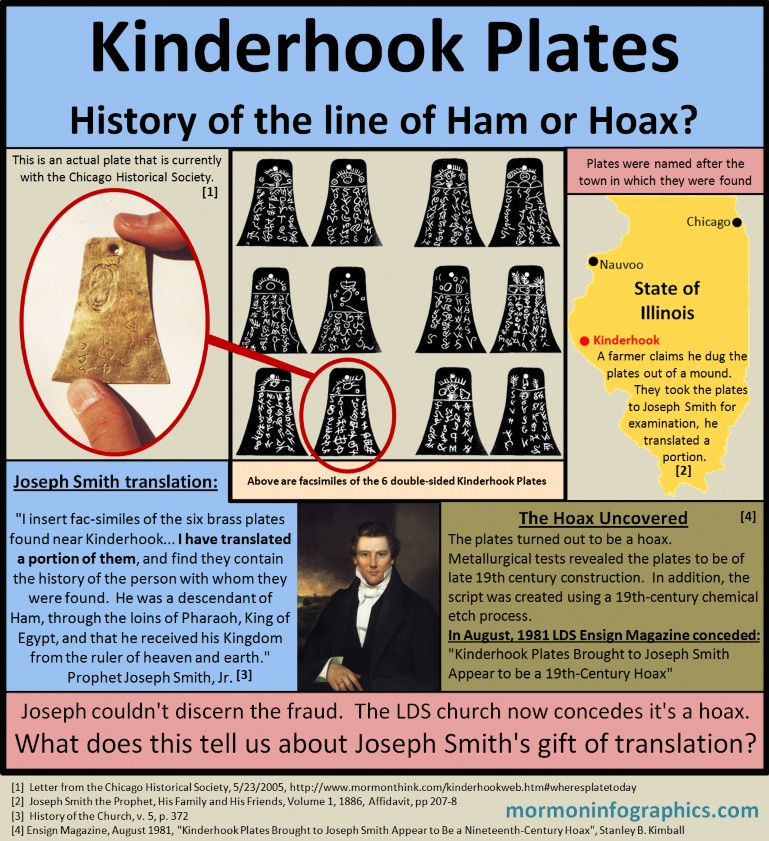
-
Book of Abraham:
-
As outlined in the “Book of Abraham” section, Joseph Smith got everything wrong about the papyri, the facsimiles, the names, the gods, the scene context, the fact that the papyri and facsimiles were 1st century CE funerary text, who was male, who was female, etc. It’s gibberish.
-
-
There is not one single non-LDS Egyptologist who supports Joseph’s Book of Abraham or its claims. Even LDS Egyptologists acknowledge there are serious problems with the Book of Abraham and Joseph’s claims.
Joseph Smith made a claim that he could translate ancient documents. This is a testable claim. Joseph failed the test with the Book of Abraham. He failed the test with the Kinderhook Plates.
With this modus operandi and track record, I’m now supposed to believe that Joseph has the credibility of translating the keystone Book of Mormon? With a rock in a hat?
That the gold plates that ancient prophets went through all the time and effort of making, engraving, compiling, abridging, preserving, hiding, and transporting were useless? Moroni’s 5,000 mile journey lugging the gold plates from Mesoamerica (if you believe the unofficial apologists) all the way to New York to bury the plates, come back as a resurrected angel, and instruct Joseph for 4 years only for Joseph to translate instead using just a…rock in a hat?
A rock he found digging in his neighbor’s property in 1822; a year before Moroni appeared in his bedroom, 5 years before he got the gold plates and Urim and Thummim, and the same stone and method Joseph used for his treasure hunting activities?
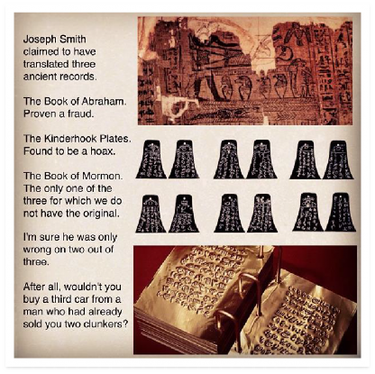
Testimony/Spiritual Witness Concerns & Questions:
-
Every major religion has members who claim the same thing: God or God’s spirit bore witness to them that their religion, prophet/pope/leaders, book(s), and teachings are true.
-
Just as it would be arrogant of a FLDS, Jehovah Witness, Catholic, Seventh-day Adventist, or Muslim to deny a Latter-day Saint’s spiritual experience and testimony of the truthfulness of Mormonism, it would likewise be arrogant of a Latter-day Saint to deny their spiritual experiences and testimonies of the truthfulness of their own religion. Yet, every religion cannot be right together.
LDS member in 2014: I know that Joseph Smith was a true prophet. I know the Church of Jesus Christ of Latter-day Saints is the one and only true Church. I know the Book of Mormon is true. I know that Thomas S. Monson is the Lord’s true Prophet today.
FLDS member in 2014: I know that Joseph Smith was a true prophet. I know the Fundamentalist Church of Jesus Christ of Latter Day Saints is the one and only true Church. I know the Book of Mormon is true. I know that Warren Jeffs is the Lord’s true Prophet today.
RLDS member in 1975: I know that Joseph Smith was a true prophet. I know the Reorganized Church of Jesus Christ of Latter Day Saints is the one and only true Church. I know the Book of Mormon is true. I know that W. Wallace Smith is the Lord’s true Prophet today.
LDCJC member in 2014: I know that Joseph Smith was a true prophet. I know The Latter Day Church of Jesus Christ is the one and only true Church. I know the Book of Mormon and the Book of Jeraneck are true. I know that Matthew P. Gill is the Lord’s true Prophet, Seer, Revelator, and Translator today.
Same method: read, ponder, and pray. Different testimonies. All four testimonies cannot simultaneously be true. This is the best God can come up with in revealing His truth to His children? Only .2% of the world’s population are members of God’s true Church. This is God’s model and standard of efficiency?
Praying about the truthfulness of the Book of Mormon does not follow that the LDS Church is true. The FLDS also believe in the Book of Mormon. So do 20+ Mormon splinter groups. They believe in the divinity of the Book of Mormon as well.
Praying about the First Vision: Which account is true? They can’t all be correct together as they conflict with one another.
-
If God’s method to revealing truth is through feelings, it’s a pretty ineffective method. We have thousands of religions and billions of members of those religions saying that their truth is God’s only truth and everyone else is wrong because they felt God or God’s spirit reveal the
truth to them.
-
Joseph Smith received a revelation, through the peep stone in his hat, to send Hiram Page and Oliver Cowdery to Toronto, Canada for the sole purpose of selling the copyright of the Book of Mormon, which is another concern in itself (why would God command to sell the copyright to His word?). The mission failed and the prophet was asked why his revelation was wrong.
Joseph decided to inquire of the Lord regarding the question. The following is a quote from Book of Mormon witness David Whitmer’s testimony:
“…and behold the following revelation came through the stone: ‘Some revelations are of God; and some revelations are of man: and some revelations are of the devil.’ So we see that the revelation to go to Toronto and sell the copy-right was not of God, but was of the devil or of the heart of man.”
– David Whitmer, An Address to All Believers in Christ, p.31
How are we supposed to know what revelations are from God, from the devil, or from the heart of man if even the Prophet Joseph Smith couldn’t tell? What kind of a god and method is this if Heavenly Father allows Satan to interfere with our direct line of communication to Him? Sincerely asking for answers?
-
As a believing Mormon, I saw a testimony as more than just spiritual experiences and feelings. I saw that we had evidence and logic on our side based on the correlated narrative I was fed by the Church about its origins. I lost this confidence at 31-years-old when I discovered that the gap between what the Church teaches about its origins versus what the primary historical documents actually show happened, what history shows what happened, what science shows what happened…couldn’t be further apart.
I read an experience that explains this in another way:
“I resigned from the LDS Church and informed my bishop that the reasons had to do with discovering the real history of the Church. When I was done he asked about the spiritual witness I had surely received as a missionary. I agreed that I had felt a sure witness, as strong as he currently felt. I gave him the analogy of Santa; I believed in Santa until I was 12. I refused to listen to reason from my friends who had discovered the truth much earlier…I just knew. However, once I learned the facts, feelings changed. I told him that Mormons have to re-define faith in order to believe; traditionally, faith is an instrument to bridge that gap between where science, history and logic end, and what you hope to be true. Mormonism re-defines faith as embracing what you hope to be true in spite of science, fact and history.”
-
Paul H. Dunn: Dunn was a General Authority of the Church for many years. He was a very popular speaker who told incredible faith-promoting war and baseball stories. Many times
Dunn shared these stories in the presence of the prophet, apostles, and seventies. Stories like how God protected him as enemy machine-gun bullets ripped away his clothing, gear, and helmet without ever touching his skin and how he was preserved by the Lord. Members of the Church shared how they really felt the Spirit as they listened to Dunn’s testimony and stories.
Unfortunately, Dunn was later caught lying about all his war and baseball stories and was forced to apologize to the members. He became the first General Authority to gain “emeritus” status and was removed from public Church life.
What about the members who felt the Spirit from Dunn’s fabricated and false stories? What does this say about the Spirit and what the Spirit really is?
-
The following are counsel from Elder Boyd K. Packer and Elder Dallin H. Oaks on how to gain a testimony:
"It is not unusual to have a missionary say, ‘How can I bear testimony until I get one? How can I testify that God lives, that Jesus is the Christ, and that the gospel is true? If I do not have such a testimony, would that not be dishonest?’ Oh, if I could teach you this one principle: a testimony is to be found in the bearing of it!”
-
Boyd K. Packer, The Quest for Spiritual Knowledge
"Another way to seek a testimony seems astonishing when compared with the methods of obtaining other knowledge. We gain or strengthen a testimony by bearing it. Someone even suggested that some testimonies are better gained on the feet bearing them than on the knees praying for them."
-
Dallin H. Oaks, Testimony
In other words, repeat things over and over until you convince yourself that it’s true. Just keep telling yourself, “I know it’s true…I know it’s true…I know it’s true” until you believe it and voilà! You now have a testimony that the Church is true and Joseph Smith was a prophet.
How is this honest? How is this ethical? What kind of advice are these Apostles giving when they’re telling you that if you don’t have a testimony, bear one anyway? How is this not lying? There’s a difference between saying you know something and you believe something.
What about members and investigators who are on the other side listening to your “testimony”? How are they supposed to know whether you actually do have a testimony of Mormonism or if you’re just following Packer’s and Oaks’ advice and you’re lying your way into one?
-
-
There are many members who share their testimonies that the Spirit told them that they were to marry this person or go to this school or move to this location or start up this business or
invest in this investment. They rely on this Spirit in making critical life decisions. When the decision turns out to be not only incorrect but disastrous, the fault lies on the individual and never on the Spirit. The individual didn’t have the discernment or it was the individual’s hormones talking or it was the individual’s greed that was talking or the individual wasn’t worthy at the time. This poses a profound flaw and dilemma: if individuals can be so convinced that they’re being led by the Spirit but yet be so wrong about what the Spirit tells them, how can they be sure of the reliability of this same exact process in telling them that Mormonism is true?
-
I felt the Spirit watching “Saving Private Ryan” and the “Schindler’s List.” Both R-rated and horribly violent movies. I also felt the Spirit watching “Forrest Gump” and the “Lion King.” After I lost my testimony, I attended a conference where former Mormons shared their stories. The same Spirit I felt telling me that Mormonism is true and that Joseph Smith was a true prophet is the same Spirit I felt in all of the above experiences.
Does this mean that Lion King is true? That Mufasa is real and true? Does this mean that Forrest Gump is real and the story happened in real life? Why did I feel the Spirit as I listened to the stories of apostates sharing how they discovered for themselves that Mormonism is not true? Why is this Spirit so unreliable and inconsistent? How can I trust such an inconsistent and contradictory Source for knowing that Mormonism is worth betting my life, time, money, heart, mind, and obedience to?
This thought provoking video raises some profound questions and challenges to the Latter-day Saint concept of “testimony” and receiving a witness from the Holy Ghost or Spirit as being a unique, reliable, and trustworthy source to discerning truth and reality:
Priesthood Restoration Concerns & Questions:
“The late appearance of these accounts raises the possibility of later fabrication.”
– LDS Historian Richard Bushman, Rough Stone Rolling, p. 75
- Like the First Vision story, none of the members of the Church or Joseph Smith’s family had ever heard prior to 1834 about a priesthood restoration from John the Baptist or Peter, James, and John. Although the priesthood is now taught to have been restored in 1829, Joseph and Oliver made no such claim until 1834. Why did it take five years for Joseph or Oliver to tell members of the Church about the priesthood?
- Joseph Smith and Oliver Cowdery did not teach anyone or record anything prior to 1834 that men ordained to offices in the Church were receiving “priesthood authority.”
- Joseph Smith and Oliver Cowdery changed the wording of earlier revelations when they compiled the 1835 Doctrine & Covenants, adding verses about the appearances of John the Baptist and Peter, James, and John as if those appearances were mentioned in the earlier revelations in the Book of Commandments, which they weren’t.
- Were the restoration of the Aaronic Priesthood under the hand of John the Baptist recorded in the Church prior to 1833, it would have appeared in the Book of Commandments. It’s not recorded anywhere in the Book of Commandments.
Were the restoration of the Melchizedek Priesthood under the hands of Peter, James, and John recorded prior to 1833, it would have appeared in the Book of Commandments. It’s not recorded anywhere in the Book of Commandments.
- It wasn’t until the 1835 edition Doctrine & Covenants that Joseph and Oliver backdated and retrofitted Priesthood restoration events to an 1829-30 time period – none of which existed in any previous Church records; including Doctrine & Covenants’ precursor, The Book of Commandments, nor the original Church history as published in The Evening and Morning Star.
- David Whitmer, one of the witnesses to the Book of Mormon, had this to say about the Priesthood restoration:
“I never heard that an Angel had ordained Joseph and Oliver to the Aaronic Priesthood until the year 1834[,] [183]5, or [183]6 – in Ohio…I do not believe that John the Baptist ever ordained Joseph and Oliver…” – Early Mormon Documents, 5:137
Witnesses Concerns & Questions:
- The testimony of the Three and Eight witnesses to the Book of Mormon is a key part to the testimonies of many members of the Church. Some even base their testimony of the truthfulness of the Book of Mormon on these 11 witnesses and their testimonies. As a missionary, I was instructed to teach investigators about the testimonies of the witnesses to the Book of Mormon as part of boosting the book’s credibility.
There are several critical problems for relying and betting on these 19th century men as credible witnesses.
- Magical Worldview: In order to truly understand the Book of Mormon witnesses and the issues, one must understand the magical worldview of people in early 19th century New England. These are people who believed in folk magic, divining rods, visions, second sight, peep stones in hats, treasure hunting (money digging or glass looking), and so on.
Many people believed in buried treasure, the ability to see spirits and their dwelling places within the local hills and elsewhere. This is why treasure digging existed. Joseph Smith, his father, and his brother (Hyrum) had a family business treasure hunting from 1820 – 1827. Joseph was hired by folks like Josiah Stowell, who Joseph mentions in his history. In 1826, Joseph was arrested and brought to court in Bainbridge, New York, for trial on fraud. He was arrested on the complaint of Stowell’s nephew who accused Joseph of being a “disorderly person and an imposter.”
It would not be unusual for a neighbor, friend, or even a stranger to come up to you and say, “I received a vision of the Lord!” and for you to respond, “What did the Lord say?”
This is one of the reasons why 21st century Mormons, once including myself, are so confused and bewildered when hearing stuff like Joseph Smith using a peep stone in a hat or Oliver Cowdery using a divining rod or dowsing rod such as illustrated below:
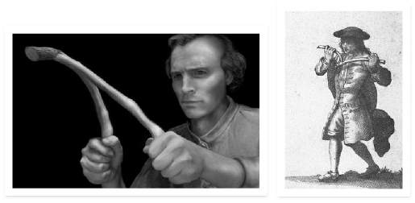
The above divining rod is mentioned in the scriptures. In Doctrine & Covenants 8, the following heading provides context for the discussion:
“Revelation given through Joseph Smith the Prophet to Oliver Cowdery, at Harmony, Pennsylvania, April 1829. In the course of the translation of the Book of Mormon, Oliver, who continued to serve as scribe, writing at the Prophet’s dictation, desired to be endowed with the gift of translation. The Lord responded to his supplication by granting this revelation.”
The revelation states, in relevant part:
-
Now this is not all they gift; for you have another gift, which is the gift of Aaron; behold, it has told you many things;
-
Behold, there is no other power, save the power of God, that can cause this gift of Aaron to be with you.
-
Therefore, doubt not, for it is the gift of God; and you shall hold it in your hands, and do marvelous works; and no power shall be able to take it away out of your hands, for it is the work of God.
-
And, therefore, whatsoever you shall ask me to tell you by that means, that I will grant unto you, and you shall have knowledge concerning it.
-
Remember that without faith you can do nothing; therefore ask in faith. Trifle not with these things; do not ask for that which you ought not.
-
Ask that you may know the mysteries of God, and that you may translate and receive knowledge from all those ancient records which have been hid up, that are sacred; and according to your faith shall it be done unto you.
(D&C 8:6-11, emphasis added)
From the D&C 8 account, we don’t really know much about what exactly the “gift of Aaron” is that Oliver Cowdery received. What is “the gift of Aaron”? The text provides several clues:
-
Oliver has a history of using it, since “it has told [him] many things.”
-
It is “the gift of God.”
-
It is to be held in Oliver’s hands (and kept there, impervious to any power).
-
It allows Oliver to “do marvelous works.”
-
It is “the work of God.”
-
The Lord will speak through it to Oliver and tell him anything he asks while using it.
-
It works through faith.
-
It enables Oliver to translate ancient sacred documents.
With only these clues, the “gift of Aaron” remains very hard to identify. The task becomes much easier, however, when we look at the original revelation contained in The Book of Commandments, a predecessor volume to the Doctrine & Covenants, used by the LDS Church before 1835. Section 7 of the Book of Commandments contains wording that was
changed in the Doctrine & Covenants 8. The term “gift of Aaron” was originally “rod” and “rod of nature” in the Book of Commandments:
“Now this is not all, for you have another gift, which is the gift of working with the rod: behold it has told you things: behold there is no other power save God, that can cause this rod of nature, to work in your hands.”
– The Book of Commandments 7:3
So, what is the “gift of Aaron” mentioned in D&C 8? It is a “rod of nature.”
What is a “rod of nature”? It is a divining rod or dowsing rod as illustrated in the above images, which Oliver Cowdery used to hunt for buried treasure.
Cowdery’s use of a divining rod to search for buried treasure evokes similar images of Joseph Smith hunting for treasure with a stone in a hat. Oliver also wished to use his divining rod, in the same way Joseph Smith used his stone and hat, to translate ancient documents. Doctrine & Covenants 8 indicates that the Lord, through Joseph Smith, granted Oliver’s request to translate using a…rod.
If Oliver Cowdery’s gift was really a divining rod then this tells us that the origins of the Church are much more involved in folk magic and superstition than we’ve been led to believe by the LDS Church’s whitewashing of its origins and history.
-
-
- Witnesses:
We are told that the witnesses never disavowed their testimonies, but we have not come to know these men or investigated what else they said about their experiences.
They are 11 individuals: Martin Harris, Oliver Cowdery, Hiram Page, David Whitmer, John Whitmer, Christian Whitmer, Jacob Whitmer, Peter Whitmer Jr., Hyrum Smith, Samuel Smith, and Joseph Smith Sr. – who all shared a common worldview of second sight, magic, and treasure digging – which is what drew them together in 1829.
The following are several facts and observations on several of the Book of Mormon Witnesses:
-
Martin Harris:
Martin Harris was anything but a skeptical witness. He was known by many of his peers as an unstable, gullible, and superstitious man. Reports assert that he and the other witnesses never literally saw the gold plates, but only an object said to be the plates, covered with a cloth. Additionally, Martin Harris had a direct conflict of interest in being a witness. He was deeply financially invested in the Book of Mormon as he mortgaged his farm to finance the book. The following are some
accounts that show the superstitious side of Martin Harris:
“Once while reading scripture, he reportedly mistook a candle's sputtering as a sign that the devil desired him to stop. Another time he excitedly awoke from his sleep believing that a creature as large as a dog had been upon his chest, though a nearby associate could find nothing to confirm his fears. Several hostile and perhaps unreliable accounts told of visionary experiences with Satan and Christ, Harris once reporting that Christ had been poised on a roof beam.”
-
BYU professor Ronald W. Walker, "Martin Harris: Mormonism's Early Convert," p.34-35
“No matter where he went, he saw visions and supernatural appearances all around him. He told a gentleman in Palmyra, after one of his excursions to Pennsylvania, while the translation of the Book of Mormon was going on, that on the way he met the Lord Jesus Christ, who walked along by the side of him in the shape of a deer for two or three miles, talking with him as familiarly as one man talks with another.”
-
John A. Clark letter, August 31, 1840 in Early Mormon Documents, 2: 271
“According to two Ohio newspapers, shortly after Harris arrived in Kirtland he began claiming to have ‘seen Jesus Christ and that he is the handsomest man he ever did see. He has also seen the Devil, whom he described as a very sleek haired fellow with four feet, and a head like that of a Jack-ass.’”
-
Early Mormon Documents 2: 271, note 32.
Before Harris became a Mormon, he had already changed his religion at least five times. After Joseph’s death, Harris continued this earlier pattern by joining and leaving 5 more different sects, including James Strang (whom Harris went on a mission to England for), other Mormon offshoots, and the Shakers. Not only did Harris join other religions, he testified and witnessed for them. It has been reported that Martin Harris “declared repeatedly that he had as much evidence for a Shaker book he had as for the Book of Mormon” (The Braden and Kelly Debate, p.173).
In addition to devotion to self-proclaimed prophet James Strang, Martin Harris was a follower to another self-proclaimed Mormon prophet by the name of Gladden Bishop. Like Strang, Bishop claimed to have plates, Urim and Thummim, and that he was receiving revelation from the Lord. Martin was one of Gladden Bishop’s witnesses to his claims.
If someone testified of some strange spiritual encounter he had, but he also told you that he...
-
conversed with Jesus who took the form of a deer
-
saw the devil with his four feet and donkey head
-
chipped off a chunk of a stone box that would mysteriously move beneath the ground to avoid capture
-
interpreted simple things like a flickering of a candle as a sign of the devil
-
had a creature appearing on his chest that no one else could see
-
…would you believe his claims? Or would you call the nearest mental hospital?
With inconsistency, conflict of interest, magical thinking, and superstition like this, exactly what credibility does Martin Harris have and why should I believe him?
-
David Whitmer:
David claimed in early June 1829 before their group declaration that he, Cowdery, and Joseph Smith observed “one of the Nephites” carrying the records in a knapsack on his way to Cumorah. Several days later this trio perceived “that the Same Person was under the shed” at the Whitmer farm. – An Insider’s View of Mormon Origins, p.179
In 1880, David Whitmer was asked for a description of the angel who showed him the plates. Whitmer responded that the angel "had no appearance or shape." When asked by the interviewer how he then could bear testimony that he had seen and heard an angel, Whitmer replied, "Have you never had impressions?" To which the interviewer responded, "Then you had impressions as the Quaker when the spirit moves, or as a good Methodist in giving a happy experience, a feeling?" "Just so," replied Whitmer. – Interview with John Murphy, June 1880, EMD 5:63
A young Mormon lawyer, James Henry Moyle, who interviewed Whitmer in 1885, asked if there was any possibility that Whitmer had been deceived. "His answer was unequivocal....that he saw the plates and heard the angel with unmistakable clearness." But Moyle went away "not fully satisfied....It was more spiritual than I anticipated." – Moyle diary, June 28, 1885, EMD 5:141
Whitmer’s testimony also included the following:
“If you believe my testimony to the Book of Mormon; if you believe that God spake to us three witnesses by his own voice, then I tell you that in June, 1838, God spake to me again by his own voice from the heavens and told me to 'separate myself from among the Latter Day Saints, for as they sought to do unto me, so it should be done unto them.’”
– David Whitmer, An Address to All Believers in Christ (promoting his Whitmerite sect)
If David Whitmer is a credible witness, why are we only using his testimony of the Book of Mormon while ignoring his other testimony claiming that God Himself spoke to Whitmer “by his own voice from the heavens” in June 1838 commanding Whitmer to apostatize from the Lord’s one and only true Church?
-
Oliver Cowdery:
Like Joseph and most of the Book of Mormon witnesses, Oliver Cowdery and his family were treasure hunters. Oliver’s preferred tool of trade, as mentioned above,
was the divining rod. He was known as a “rodsman.” Along with the witnesses, Oliver held a magical mindset.
Oliver Cowdery was not an objective and independent witness. As scribe for the Book of Mormon, co-founder of the Church, and cousin to Joseph Smith, there was a serious conflict of interest in Oliver being a witness.
-
- Second Sight:
People believed they could see things as a vision in their mind. They called it “second sight.” We call it “imagination.” It made no difference to these people if they saw with their natural eyes or their spiritual eyes as they both were one and the same.
As mentioned previously, people believed they could see spirits and their dwelling places in the local hills along with seeing buried treasure deep in the ground. This supernatural way of seeing the world is also referred in Doctrine & Covenants as “the eyes of our understanding.”
If the plates and the experiences were real and tangible as 21st century Mormons are led to believe, why would the witnesses make the following kind of statements when describing the plates and the experience?
“While praying I passed into a state of entrancement, and in that state I saw the angel and the plates.”
-
Martin Harris, (Anthony Metcalf, Ten Years Before the Mast, n.d., microfilm copy, p. 70-71)
“I never saw the gold plates, only in a visionary or entranced state.” – EMD 2:346-47 “He only saw the plates with a spiritual eye” – Joseph Smith Begins His Work, Vol. 1, 1958 “As shown in the vision” – Zenas H. Gurley, Jr., Interview with David Whitmer on January 14, 1885
“Never saw the plates with his natural eyes but only in vision or imagination”
-
Letter from Stephen Burnett to "Br. Johnson," April 15, 1838, in Joseph Smith Letter Book, p. 2
“They were shown to me by a supernatural power”
– History of the Church Vol. 3, Ch. 21, p. 307-308
“...when I came to hear Martin Harris state in public that he never saw the plates with his natural eyes only in vision or imagination, neither Oliver nor David & also that the eight witnesses never saw them & hesitated to sign that instrument for that reason, but were persuaded to do it, the last pedestal gave way, in my view our foundation was sapped & the entire superstructure fell in heap of ruins, I therefore three week since in the Stone Chapel...renounced the Book of Mormon...after we were done speaking M Harris arose & said he was sorry for any man who rejected the Book of Mormon for he knew it was true, he said he had hefted the plates
repeatedly in a box with only a tablecloth or a handkerchief over them, but he never saw them only as he saw a city throught [sic] a mountain. And said that he never should have told that the testimony of the eight was false, if it had not been picked out of—–—[him/me?] but should have let it passed as it was..."
– Letter from Stephen Burnett to "Br. Johnson," April 15, 1838, in Joseph Smith Letter Book, p. 2
The foreman in the Palmyra printing office that produced the first Book of Mormon said that Harris “used to practice a good deal of his characteristic jargon and ‘seeing with the spiritual eye,’ and the like.”
– Mormonism: Its Origin, Rise, and Progress, p.71
Two other Palmyra residents said that Harris told them that he had seen the plates with “the eye of faith” or “spiritual eyes” – EMD 2:270 and 3:22
John H. Gilbert, the typesetter for most of the Book of Mormon, said that he had asked Harris, “Martin, did you see those plates with your naked eyes?” According to Gilbert, Harris “looked down for an instant, raised his eyes up, and said, ‘No, I saw them with a spiritual eye.” – EMD 2:548
If these witnesses literally really saw the plates like everyone else on the planet sees tangible objects…why strange statements like, “I never saw them only as I see a city through a mountain”? What does that even mean? I’ve never seen a city through a mountain. Have you?
Why all these bizarre statements from the witnesses if the plates were real and the event literal? Why would you need a vision or supernatural power to see real, physical plates that Joseph said were in a box that he carried around? When Martin Harris was asked, "But did you see them [plates] with your natural, your bodily eyes, just as you see this pencil-case in my hand? Now say no or yes to this." Martin answered, "I did not see them as I do that pencil-case, yet I saw them with the eye of faith; I saw them just as distinctly as I see anything around me, though at the time they were covered over with a cloth.”
– Origin and History of the Mormonites, p. 406
Why couldn’t Martin just simply answer “yes”?
-
- James Strang and the Voree Plates Witnesses:
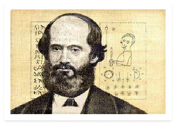
James Strang and his claims are absolutely fascinating. He was basically Joseph Smith 2.0
- but with a twist. Like Joseph, Strang did the following:
-
Claimed that he was visited by an angel who reserved plates for him to translate into the word of God. “The record which was sealed from my servant Joseph. Unto thee it is reserved.”
-
Received the “Urim and Thummim.”
-
Produced 11 witnesses who testified that they too had seen and inspected ancient metal plates.
-
Introduced new scripture. After unearthing the plates (the same plates as Laban from whom Nephi took the brass plates in Jerusalem), Strang translated it into scripture called the “Book of the Law of the Lord.”
-
Established a new Church: The Church of Jesus Christ of Latter Day Saints (Strangite). Its headquarters is still in Voree, Wisconsin.
-
Like the Book of Mormon, the Book of the Law of the Lord has the testimony of its Witnesses in its preface:
TESTIMONY
Be it known unto all nations, kindreds, tongues and people, to whom this Book of the Law of the Lord shall come, that James J. Strang has the plates of the ancient Book of the Law of the Lord given to Moses, from which he translated this law, and has shown them to us. We examined them with our eyes, and handled them with our hands. The engravings are beautiful antique workmanship, bearing a striking resemblance to the ancient oriental languages; and those from which the laws in this book were translated are eighteen in number, about seven inches and three-eights wide, by nine inches long, occasionally embellished with beautiful pictures.
And we testify unto you all that the everlasting kingdom of God is established, in which this law shall be kept, till it brings in rest and everlasting righteousness to all the faithful.
SAMUEL GRAHAM, SAMUEL P. BACON, WARREN POST, PHINEAS WRIGHT, ALBERT N. HOSMER, EBENEZER PAGE, JEHIEL SAVAGE.
In addition to the above 7 witnesses, there were 4 witnesses who went with Strang as they unearthed the Voree Plates:
TESTIMONY OF WITNESSES TO THE VOREE PLATES
- On the thirteenth day of September, 1845, we, Aaron Smith, Jirah B. Wheelan, James M. Van Nostrand, and Edward Whitcomb, assembled at the call of James J. Strang, who is by us and many others approved as a Prophet and Seer of God. He proceeded to inform us that it had been revealed to him in a vision that an account of an ancient people was buried in a hill south of White River bridge, near the east line of Walworth County; and leading us to an oak tree about one foot in diameter, told us that we would find it enclosed in a case of rude earthen ware under that tree at the depth of about three feet; requested us to dig it up, and charged us to so examine the ground that we should know we were not imposed upon, and that it had not been buried there since the tree grew. The tree was surrounded by a sward of deeply rooted grass, such as is usually found in the openings, and upon the most critical examination we could not discover any indication that it had ever been cut through or disturbed.
- We then dug up the tree, and continued to dig to the depth of about three feet, where we found a case of slightly baked clay containing three plates of brass. On one side of one is a landscape view of the south end of Gardner's prairie and the range of hills where they were dug. On another is a man with a crown on his head and a scepter in his hand, above is an eye before an upright line, below the sun and moon surrounded with twelve stars, at the bottom are twelve large stars from three of which pillars arise, and closely interspersed with them are seventy very small stars. The other four sides are very closely covered with what appear to be alphabetic characters, but in a language of which we have no knowledge.
- The case was found imbedded in indurated clay so closely fitting it that it broke in taking out, and the earth below the soil was so hard as to be dug with difficulty even with a pickax. Over the case was found a flat stone about one foot wide each way and three inches thick, which appeared to have undergone the action of fire, and fell in pieces after a few minutes exposure to the air. The digging extended in the clay about eighteen inches, there being two kinds of earth of different color and appearance above it.
- We examined as we dug all the way with the utmost care, and we say, with utmost confidence, that no part of the earth through which we dug exhibited any sign or indication that it had been moved or disturbed at any time previous. The roots of the tree stuck down on every side very closely, extending below the case, and closely interwoven with roots from other trees. None of them had been broken or cut away. No clay is found in the country like that of which the case is made.
- In fine, we found an alphabetic and pictorial record, carefully cased up, buried deep in the earth, covered with a flat stone, with an oak tree one foot in diameter growing over it, with every evidence that the sense can give that it has lain there as long as that tree has been growing. Strang took no part in the digging, but kept entirely away from before the first blow was struck till after the plates were taken out of the case; and the sole inducement to our digging was our faith in his statement as a Prophet of the Lord that a record would thus and there be found.
AARON SMITH, JIRAH B. WHEELAN,
J. M. VAN NOSTRAND, EDWARD WHITCOMB.
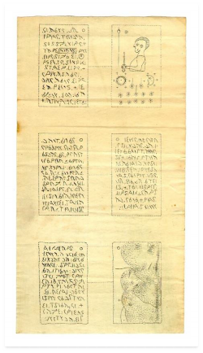 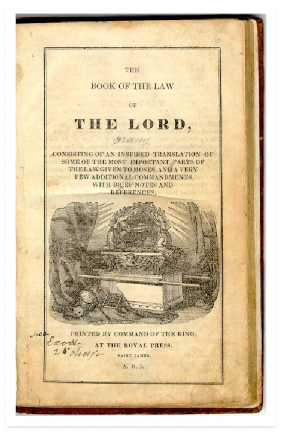
Facsimiles from the Voree Plates The Book of the Law of the Lord
Like Joseph, Strang had a scribe (Samuel Graham) who wrote as Strang translated. Along with several of the witnesses, Graham was later excommunicated from Strang’s Church.
There is no direct evidence that any of the above 11 Strang witnesses ever denied their testimony of James Strang, the Voree Plates, Strang’s church or Strang’s divine calling.
Every single living Book of Mormon witness besides Oliver Cowdery accepted Strang’s prophetic claim of being Joseph’s true successor and joined him and his church.
Additionally, every single member of Joseph Smith’s family except for Hyrum’s widow also endorsed, joined, and sustained James Strang as “Prophet, Seer, and Revelator.”
What does this say about the credibility of the Book of Mormon witnesses if they were so easily duped by James Strang and his claims of being a prophet called of God to bring forth new scripture from ancient plates only to later turn out to be a fraud?
- No Document of Actual Signatures:
The closest thing we have in existence to an original document of the testimonies of the witnesses is a printer’s manuscript written by Oliver Cowdery. Every witness name except Oliver Cowdery on that document is not signed; they are written in Oliver’s own handwriting. Further, there is no testimony from any of the witnesses, with the exception of David Whitmer, directly attesting to the direct wording and claims of the manuscript or statements in the Book of Mormon.
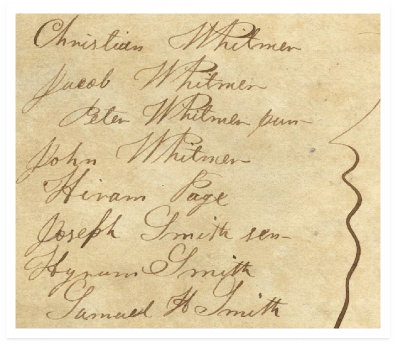
Closest Original to Testimony of Witnesses
While we have “testimonies” from the witnesses recorded in later years through interviews and second eyewitness accounts and affidavits, many of the “testimonies” given by some of the witnesses do not match the claims and wording of the statements in the Book of Mormon.
For example:
-
Testimony of Three Witnesses (which includes Martin Harris) states:
“…that we beheld and saw the plates, and the engravings thereon;”
-
Martin Harris:
“…he said he had hefted the plates repeatedly in a box with only a tablecloth or a handkerchief over them, but he never saw them…”
– Letter from Stephen Burnett to "Br. Johnson," April 15, 1838, in Joseph Smith Letter Book, p. 2
“I did not see them as I do that pencil-case, yet I saw them with the eye of faith; I saw them just as distinctly as I see anything around me, though at the time they were covered over with a cloth.”
– Origin and History of the Mormonites, p. 406
There is a difference between saying you “beheld and saw the plates and the engravings thereon” and saying you “hefted the plates repeatedly in a box with only a tablecloth or a handkerchief over them” or that the plates “were covered over with a cloth” and that you “saw them with a spiritual eye.”
When I was a missionary, my understanding and impression from looking at the testimony of the Three and Eight Witnesses in the Book of Mormon was that the statements were legally binding documents in which the names represented signatures on the original document similar to what you would see on the original US Declaration of Independence. This is how I presented the testimonies to investigators. According to the above manuscript that Oliver took to the printer for the Book of Mormon, they were not signatures. Since there is no evidence of any document whatsoever with the signatures of all of the witnesses, the only real testimonies we have from the witnesses are later interviews given by them and eyewitness accounts/affidavits made by others, some of which are shown previously.
From a legal perspective, the statements of the testimonies of the Three and Eight witnesses hold no credibility or weight in a court of law as there are a) no signatures of any of the witnesses except Oliver, b) no specific dates, c) no specific locations, and d) some of the witnesses made statements after the fact that contradict and cast doubt on the specific claims made in the statements contained in the preface of the Book of Mormon.
-
- Conclusion:
- “The Witnesses never recanted or denied their testimonies”:
-
Neither did James Strang’s witnesses; even after they were excommunicated from the church and estranged from Strang. Neither did dozens of Joseph Smith’s neighbors and peers who swore and signed affidavits on Joseph and his family’s characters. Neither did many of the Shaker witnesses who signed affidavits that they saw an angel on the roof top holding the “Sacred Roll and Book” written by founder Ann Lee. Same goes with the thousands of people over the centuries who claimed their entire lives to have seen the Virgin Mary and pointing to their experience as evidence that Catholicism is true.
There are also thousands of witnesses who never recanted their testimonies of seeing UFO’s, Big Foot, the Loch Ness Monster, Abominable Snowman, Aliens, and so on.
It doesn’t mean anything. People can believe in false things their entire lives and never recant. Just because they never denied or recanted does not follow that their experience and claims are true or that reality matches to what their perceived experience was.
-
- Problems:
-
In discussing the witnesses, we should not overlook the primary accounts of the events they testified to. The official statements published in the Book of Mormon are not dated, signed (we have no record with their signatures except for Oliver’s), nor is a specific location given for where the events occurred. These are not eleven legally sworn affidavits but rather simple statements pre-written by Joseph Smith with claims of having been signed by three men and another by eight.
-
All of the Book of Mormon witnesses, excepting Martin Harris, were related by blood or marriage either with the Smiths or Whitmers. Oliver Cowdery (married to Elizabeth Ann Whitmer and cousin to Joseph Smith), Hiram Page (married to Catherine Whitmer), and the five Whitmers were related by marriage. Of course, Hyrum Smith, Samuel Smith, and Joseph Smith Sr. were Joseph’s brothers and father.
Mark Twain made light of this obvious problem:
“…I could not feel more satisfied and at rest if the entire Whitmer family had testified.” – Roughing It, p.107-115
-
Within eight years, all of the Three Witnesses were excommunicated from the Church. This is what Joseph Smith said about them in 1838:
“Such characters as…John Whitmer, David Whitmer, Oliver Cowdery, and Martin Harris, are too mean to mention; and we had liked to have forgotten them.” – History of the Church Vol. 3, Ch. 15, p. 232
This is what First Counselor of the First Presidency and once close associate Sidney Rigdon had to say about Oliver Cowdery:
“…a lying, thieving, counterfeiting man who was ‘united with a gang of counterfeiters, thieves, liars, and blacklegs in the deepest dye, to deceive, cheat, and defraud the saints out of their property, by every art and stratagem which wickedness could invent…”
– February 15, 1841 Letter and Testimony, p.6-9
What does it say about the witnesses and their characters if even the Prophet and his counselor in the First Presidency thought they were questionable?
-
As mentioned in the above “Polygamy/Polyandry” section, Joseph was able to influence and convince many of the 31 witnesses to lie and perjure in a sworn affidavit that Joseph was not a polygamist. Is it outside the realm of possibility that Joseph was also able to influence or manipulate the experiences of his own magical thinking treasure digging family and friends as witnesses? Mormon men who already believed in second sight and who already believed that Joseph Smith was a true prophet of God?
-
If the Prophet Joseph Smith could get duped with the Kinderhook Plates thinking that the 19th century fake plates were a legitimate record of a “descendent of Ham,” how is having gullible guys like Martin Harris handling the covered gold plates going to prove anything?
-
James Strang’s claims and Voree Plates Witnesses are distinctive and more impressive compared to the Book of Mormon Witnesses:
-
All of Strang’s witnesses were not related to one another through blood or marriage like the Book of Mormon Witnesses were.
-
Some of the witnesses were not members of Strang’s church.
-
The Voree Plates were displayed in a museum for both members and non-members to view and examine.
-
Strang provided 4 witnesses who testified that on his instructions, they actually dug the plates up for Strang while he waited for them to do so. They confirmed that the ground looked previously undisturbed.
-
-
The Shakers and Ann Lee:
-
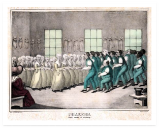
The Shakers felt that "Christ has made his second appearance on earth, in a chosen female known by the name of Ann Lee, and acknowledged by us as
our Blessed Mother in the work of redemption" (Sacred Roll and Book, p.358). The Shakers, of course, did not believe in the Book of Mormon, but they had a book entitled A Holy, Sacred and Divine Roll and Book; From the Lord God of Heaven, to the Inhabitants of Earth.
More than 60 individuals gave testimony to the Sacred Roll and Book, which was published in 1843. Although not all of them mention angels appearing, some of them tell of many angels visiting them. One woman told of eight different visions.
Here is the testimony statement:
We, the undersigned, hereby testify, that we saw the holy Angel standing upon the house-top, as mentioned in the foregoing declaration, holding the Roll and Book.
Betsey Boothe. Louisa Chamberlain. Caty De Witt.
Laura Ann Jacobs. Sarah Maria Lewis. Sarah Ann Spencer. Lucinda McDoniels. Maria Hedrick.
Joseph Smith only had three witnesses who claimed to see an angel. The Shakers, however, had a large number of witnesses who claimed they saw angels and the Sacred Roll and Book. There are over a hundred pages of testimony from "Living Witnesses." The evidence seems to show that Martin Harris accepted the Sacred Roll and Book as a divine revelation. Clark Braden stated: "Harris declared repeatedly that he had as much evidence for a Shaker book he had as for the Book of Mormon" (The Braden and Kelly Debate, p.173).
Why should we believe the Book of Mormon witnesses but not the Shakers witnesses? What are we to make of the reported Martin Harris comment that he had as much evidence for the Shaker book he had as for the Book of Mormon?
In light of the James Strang/Voree Plates witnesses, the fact that all of the Book of Mormon Witnesses – except Martin Harris – were related to either Joseph Smith or David Whitmer, along with the fact that all of the witnesses were treasure hunters who believed in second sight, and in light of their superstitions and reputations…why would anyone gamble with their lives in believing in a book based on anything these men said or claimed or what’s written on the testimonies of the Witnesses page in the Book of Mormon?
The mistake that is made by 21st century Mormons is that they’re seeing the Book of Mormon Witnesses as empirical, rational, nineteenth-century men instead of the nineteenth-century magical thinking, superstitious, and treasure digging men they were. They have ignored the peculiarities of their worldview, and by so doing, they misunderstand their experiences as witnesses.
At the end of the day? It all doesn’t matter. The Book of Mormon Witnesses and their testimonies of the gold plates are irrelevant. It does not matter whether eleven 19th century treasure diggers with magical worldviews saw some gold plates or not. It doesn’t matter because of this one simple fact:
Joseph did not use the gold plates for translating the Book of Mormon.
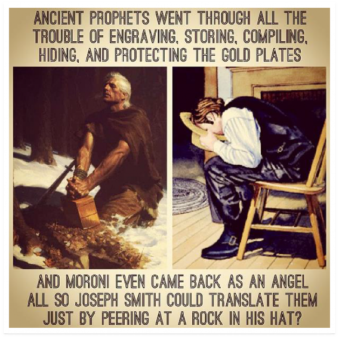
Temples & Freemasonry Concerns & Questions:
- Just seven weeks after Joseph’s Masonic initiation, Joseph introduced the LDS endowment ceremony in May 1842.
- President Heber C. Kimball, a Mason himself and a member of the First Presidency for 21 years, made the following statement:
“We have the true Masonry. The Masonry of today is received from the apostasy which took place in the days of Solomon, and David. They have now and then a thing that is correct, but we have the real thing.”
– Stanley B. Kimball, Heber C. Kimball and Family: The Nauvoo Years, p.458
- If Masonry had the original temple ceremony but became distorted over time, why doesn’t the LDS ceremony more closely resemble an earlier form of Masonry, which would be more correct rather than the exact version that Joseph Smith was exposed to in his March 1842 Nauvoo, Illinois initiation?
- Freemasonry has zero links to Solomon’s temple. Although more a Church folklore, with origins from comments made by early Mormon Masons such as Heber C. Kimball, than being Church doctrine, it’s a myth that the endowment ceremony has its origins from Solomon’s temple or that Freemasonry passed down parts of the endowment over the centuries from Solomon’s temple. Solomon’s temple was all about animal sacrifice. Freemasonry has its origins to stone tradesmen in medieval Europe – not in 950 BC Jerusalem. If there’s no connection to Solomon’s temple, what’s so divine about a man-made medieval European secret fraternity and its rituals?
- Why did the Church remove the blood oath penalties and the 5 Points of Fellowship at the veil from the endowment ceremony in 1990? Both 100% Masonic rituals? What does this say about the Temple and the endowment ceremony if 100% pagan Masonic rituals were in it from its inception? What does it say about the Church if it removed something that Joseph Smith said he restored and which would never again be taken away from the earth?
- Is God really going to require people to know secret tokens, handshakes, and signs to get into the Celestial Kingdom? If so, Masons, former Mormons, anti-Mormons, unworthy Mormons as well as non-Mormons who’ve seen the endowment on YouTube or read about the signs/handshakes/tokens online should pass through the pearly gates with flying colors.
- Does the eternal salvation, eternal happiness, and eternal sealings of families really depend on medieval originated Masonic rituals in multi-million dollar castles? Is God really going to separate good couples and their children who love one other and who want to be together in the next life because they object to uncomfortable and strange Masonic temple rituals and a polygamous heaven?
Science Concerns & Questions:
The problem Mormonism encounters is that so many of its claims are well within the realm of scientific study, and as such, can be proven or disproven. To cling to faith in these areas, where the overwhelming evidence is against it, is willful ignorance, not spiritual dedication.
- 2 Nephi 2:22 and Alma 12:23-24 state there was no death of any kind (humans, all animals, birds, fish, dinosaurs, etc.) on this earth until the “Fall of Adam”, which according to D&C 77:6-7 occurred 7,000 years ago. It is scientifically established there has been life and death on this planet for billions of years. How does the Church reconcile this?
How do we explain the massive fossil evidence showing not only animal death but also the deaths of at least 14 different Hominin species over the span of 250,000 years prior to Adam?
- If Adam and Eve are the first humans, how do we explain the 14 other Hominin species who lived and died 35,000 – 250,000 years before Adam? When did those guys stop being human?
- Science has proven that there was no worldwide flood 4,500 years ago. Do you really literally believe in the flood story where 600-year-old Noah built a massive ark with dimensions that equate to about 450 feet long, 75 feet wide and 45 feet deep? That Noah and his very small family took two of each unclean creature and seven of every clean creature and all the food and fresh water that would be needed on board for 6 months? And that after the flood, Noah and his family released the animals and they, along with Noah’s family of eight repopulated – via incest – the entire planet?
Simple mathematics show that there was insufficient room on the ark to house all the animal species found on the planet, let alone the food required to feed all of them.
How did the carnivores survive? There would not have been nearly enough herbivores to sustain the carnivores during the voyage and the months after the ark landed. What would the herbivores eat after the flood subsided?
There are a bunch of other problems with the global flood and Noah’s ark story but I find it incredible that this is supposed to be taken literally considering the abundance of evidence against it. Am I expected to believe in a god who would wipe out the entire planet like that? Kill millions of women and innocent children for the actions of others? What kind of a god is this?
Other events/claims that science has discredited:
-
Tower of Babel
-
People living to be 600+ years old
-
- Humans and animals having their origins from Noah’s family and the animals contained in the ark 4,500 years ago. It is scientifically impossible, for example, for the bear to have evolved into several species (Sun Bear, Polar Bear, Grizzly Bear, etc.) from common ancestors from Noah’s time.
- Jonah and the whale
- People turning into salt in Sodom & Gomorrah
- As mentioned in Book of Abraham section, the sun receives its “light from the revolutions of Kolob.”
- They carried honey bees across the ocean? Swarms of them? All manner of them which was upon the face of the land? (Ether 2:3). Putting a hole on the bottom and on the top of a submarine-like vessel that is tight like a dish so that when you’re in need of air, you unplug one hole but make sure to plug it back in when you go back in the water? (Ether 2:19-20)
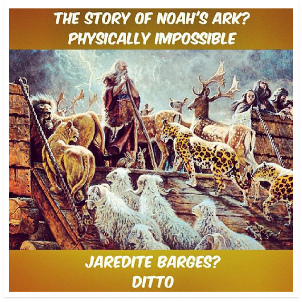
Scriptures Concerns & Questions:
To believe in the scriptures, I have to believe in a god who endorsed murder, genocide, infanticide, rape, slavery, selling daughters into sex slavery, polygamy, child abuse, stoning disobedient children, pillage, plunder, sexism, racism, human sacrifice, animal sacrifice, killing people who work on the Sabbath, death penalty for those who mix cotton with polyester, and so on.
Aside from scientifically discredited stories mentioned earlier, the following scriptures are some among many which make it hard for me believe the scriptures literally and that the scriptures hold any credibility:
1. D&C 132:
I’m supposed to believe in a god who issued an FLDS style revelation that states stuff like: the only form of polygamy permitted is a union with a virgin after first giving the opportunity to the first wife to consent to the marriage. If the first wife doesn’t consent, the husband
is exempt and may still take an additional wife, but the first wife must at least have the opportunity to consent. In case the first wife doesn’t consent, she will be “destroyed.” Also, the new wife must be a virgin before the marriage and be completely monogamous after the marriage or she will be destroyed.
- Numbers 31:
This is truly despicable behavior from God and Moses. Under God’s direction, Moses’ army defeats the Midianites. They kill all the adult males, but take the women and children
captive. When Moses learns that they left some alive, he angrily says: “Have you saved all the women alive? Kill every male among the little ones, and kill every woman that hath known man by lying with him. But all the women children, that have not known a man by lying with him, keep alive for yourselves.” So they went back and did as Moses – the Lord’s prophet – commanded, killing everyone except for the virgins. In this way, they got 32,000 virgins. This is the same prophet that Joseph Smith claimed to have appeared to him and Oliver Cowdery in the Kirtland Temple on April 3, 1836 for the “gathering of Israel.”
- 1 Nephi 4:
The Lord commands Nephi to murder (decapitate) Laban for the brass plates. Never mind that Laban was drunk and defenseless. The argument that Laban would send his servants after Nephi and his brothers is ridiculous considering that the same God who had no problem lighting stones and taming swarms of bees (Ether 2-3) for the Brother of Jared can also preserve Nephi. This story has been used as a defense in killings by religious people.
4. Exodus 12:12:
God kills all the firstborn children in Egypt except for those who put blood on their doors? What kind of a god is this? Like the flood, what kind of a loving god would kill innocent children for the actions of others?
- Deuteronomy 21:18-21:
Got a rebellious kid who doesn’t listen? Take him to the elders and to the end of the gates and stone him to death!
6. Exodus 35:1-2:
God commands death penalty for those who work on the Sabbath trying to support their families.
7. Number 21:5-9:
God doesn’t like to hear whining and ingratitude so he sends out a bunch of snakes to kill the people. When the people had enough of the snakes, they ask Moses to tell God to quit it. God decides Moses is persuasive and tells Moses to put a snake on a pole and tell the people to look at the pole and they won’t die. So, the pole is built, the people look at it and they don’t die. The moral of the story? Don’t whine or God will send in the snakes.
8. Judges 19:22-29:
After picking up his concubine from his father-in-law’s house, a certain Levite settles in Gibeah for the night. The men of the city attempt to sodomize him, but end up raping the concubine until her death. As a response, the Levite dismembers his wife’s corpse and sends her body parts throughout the land of Israel. Who needs R or X-rated movies when you got scripture like this?
As a believing Mormon, I tried to rationalize some of the craziness by saying, “Oh, this is in the crazy Old Testament when the Law of Moses was in force. Christ came and fulfilled the Law of Moses.”
The problem with this is that the crazy god of the Old Testament was Jehovah. Who’s Jehovah? The premortal Jesus Christ. So, Christ is the crazy god of the Old Testament. The Christ of the Old Testament and the Christ of the New Testament are light years different. Again, I’m asked to believe in not only a part-time racist god and a part-time polygamous god but a part-time psychopathic schizophrenic one as well.
Other Concerns & Questions:
These concerns are secondary to all of the above. These concerns do not matter if the foundational truth claims (Book of Mormon, First Visions, Prophets, Book of Abraham, Witnesses, Priesthood, Temples, etc.) are not true.
-
Church’s Dishonesty and Whitewashing Over Its History:
Adding to the above deceptions and dishonesty over history (rock in hat translation, polygamy/polyandry, multiple First Vision accounts, etc.), the following bother me:
-
2013 Official Declaration 2 Header Update Dishonesty:
-
“Early in its history, Church leaders stopped conferring the priesthood on black males of African descent. Church records offer no clear insights into the origins of this practice.”
The following is a 1949 First Presidency Statement:
“August 17, 1949
The attitude of the Church with reference to Negroes remains as it has always stood. It is not a matter of the declaration of a policy but of direct commandment from the Lord, on which is founded the doctrine of the Church from the days of its organization, to the effect that Negroes may become members of the Church but that they are not entitled to the priesthood at the present time. The prophets of the Lord have made several statements as to the operation of the principle. President Brigham Young said: ‘Why are so many of the inhabitants of the earth cursed with a skin of blackness? It comes in consequence of their fathers rejecting the power of the holy priesthood, and the law of God. They will go down to death. And when all the rest of the children have received their blessings in the holy priesthood, then that curse will be removed from the seed of Cain, and they will then come up and possess the priesthood, and receive all the blessings which we now are entitled to.’
President Wilford Woodruff made the following statement: ‘The day will come when all that race will be redeemed and possess all the blessings which we now have.’
The position of the Church regarding the Negro may be understood when another doctrine of the Church is kept in mind, namely, that the conduct of spirits in the premortal existence has some determining effect upon the conditions and circumstances under which these spirits take on mortality and that while the details of this principle have not been made known, the mortality is a privilege that is given to those who maintain their first estate; and that the worth of the privilege is
so great that spirits are willing to come to earth and take on bodies no matter what the handicap may be as to the kind of bodies they are to secure; and that among the handicaps, failure of the right to enjoy in mortality the blessings of the priesthood is a handicap which spirits are willing to assume in order that they might come to earth. Under this principle there is no injustice whatsoever involved in this deprivation as to the holding of the priesthood by the Negroes.
The First Presidency”
Along with the above First Presidency statement, there are many other statements and explanations made by prophets and apostles clearly “justifying” the Church’s racism. So, the 2013 edition Official Declaration 2 Header in the scriptures is not only misleading, it’s dishonest. We do have records – including from the First Presidency itself – with very clear insights on the origins of the ban on the blacks.
December 2013 Update: The Church released a new Race and the Priesthood essay which contradicts their 2013 Official Declaration 2 Header. In the essay, they point to Brigham Young as the originator of the ban. Further, they effectively throw 10 latter-day “Prophets, Seers, and Revelators” under the bus as they “disavow” the “theories” that these ten men taught and justified – for 130 years – as doctrine and revelation for the Church’s institutional and theological racism.
Finally, they denounce the idea that God punishes individuals with black skin or that God withholds blessings based on the color of one’s skin while completely ignoring the contradiction of the keystone Book of Mormon teaching exactly this.
Yesterday’s revelation and doctrine is today’s “disavowed theories.” Yesterday’s prophets are today’s disavowed heretics.
-
Zina Diantha Huntington Young:
The following is a quick biographic snapshot of Zina:
-
She was married for 7.5 months and was about 6 months pregnant with her first husband, Henry Jacobs, when she married Joseph after being told Joseph’s life was in danger from an angel with a drawn sword.
-
After Joseph’s death, she married Brigham Young and had Young’s baby while her first husband, Henry, was on a mission.
-
Zina would eventually become the Third General Relief Society President of the Church.
If anyone needs proof that the Church is still whitewashing history in 2014 aside from the above-mentioned issues, Zina is it. The following are 100% LDS sources:
-
Zina’s biographical page on LDS.org:
-
In the “Marriage and Family” section, it does not list Joseph Smith as a husband or concurrent husband with Henry Jacobs.
-
In the “Marriage and Family” section, it does not list Brigham Young as a concurrent husband with Henry Jacobs.
-
There is nothing in there about the polyandry.
-
It is deceptive in stating that Henry and Zina “did not remain together” while omitting that Henry separated only after Brigham Young took his wife and told Henry that Zina was now only his (Brigham) wife.
-
-
-
This is Zina’s index file on LDS-owned FamilySearch.org:
-
It clearly shows all of Zina’s husbands, including her marriage to Joseph Smith.
-
Why is Joseph Smith not listed as one of Zina’s husbands in the “Marriage and Family” section or anywhere else on her biographical page on LDS.org? Why is there not a single mention or hint of polyandry on her page or in that marriage section when she was married to two latter-day prophets and having children with Brigham Young while still being married to her first husband, Henry?
-
Brigham Young Sunday School Manual:
-
In the Church’s Sunday School manual, Teachings of the Presidents of the Church: Brigham Young, the Church changed the word “wives” to “[wife].”
-
Not only is the manual deceptive in disclosing whether or not Brigham Young was a polygamist but it’s deceptive in hiding Brigham Young’s real teaching on marriage: "The only men who become Gods, even the Sons of God, are those who enter into polygamy." – Journal of Discourses 11:269
-
-
-
-
-
Church Finances:
-
Zero transparency to members of the Church. Why is the one and only true Church keeping its books in the dark? Why would God’s one true Church choose to “keep them in darkness” over such a stewardship? History has shown time and time again that corporate secret wealth is breeding ground for corruption.
-
The Church used to be transparent with its finances but stopped in 1959.
-
Estimated $1.5 billion megamall City Creek Center:
-
Total Church humanitarian aid from 1985-2011: $1.4 billion
-
Something is fundamentally wrong with “the one true Church” spending more on an estimated $1.5 billion dollar high-end megamall than it has in 26 years of humanitarian aid.
-
For an organization that claims to be Christ’s only true Church, this expenditure is a moral failure on so many different levels. For a Church that asks its members to sacrifice greatly for Temple building, such as the case of Argentinians giving the Church gold from their dental work for the São Paulo Brazil Temple, this mall business is absolutely shameful.
-
Of all the things that Christ would tell the prophet, the prophet buys a mall and says “Let’s go shopping!”? Of all the sum total of human suffering and poverty on this planet, the inspiration the Brethren feel for His Church is to get into the shopping mall business?
-
Hinckley made the following dishonest statement in a 2002 interview to a German journalist:
Reporter: In my country, the…we say the people’s Churches, the Protestants, the Catholics, they publish all their budgets, to all the public.
Hinckley: Yeah. Yeah.
Reporter: Why is it impossible for your Church?
Hinckley: Well, we simply think that the…that information belongs to those who made the contribution, and not to the world. That’s the only thing. Yes.
-
Where can I see the Church’s books? I’ve paid tithing. Where can I go to see what the Church’s finances are? Where can current tithing paying members go to see the books? The answer: we can’t. Even if you’ve made the contributions as Hinckley stated above? Unless you’re an authorized General Authority or senior Church employee in the accounting department with a Non-Disclosure Agreement? You’re out of luck. Hinckley knew this and for whatever reason made the dishonest statement.
-
-
Tithing: I find the following quote in the December 2012 Ensign very disturbing:
“If paying tithing means that you can’t pay for water or electricity, pay tithing. If paying tithing means that you can’t pay your rent, pay tithing. Even if paying tithing means that you don’t have enough money to feed your family, pay tithing. The Lord will not abandon you.”
Would a loving, kind, empathic God really place parents in the horrible position of having to choose whether to feed their children or pay what little they have to a multi- billion megamall owning Church that receives an estimated $8,000,000,000 in annual tithing receipts?
“Well, God tested Abraham by asking him to kill his son and besides, the Lord will take care of them through the Bishop’s storehouse.” Yes, the same god who tested Abraham is also the same crazy god who killed innocent babies and endorsed genocide, slavery, and rape. Besides, whatever happened to self-sufficiency?
Begging the Bishop for food when you had the money for food but because you
followed the above Ensign advice and gave your food money to the Church you’re now dependent on the Church for food money.
-
-
-
-
Names of the Church:
-
1830: Church of Jesus Christ
-
1838: The Church of Jesus Christ of Latter Day Saints
After deciding “Church of Jesus Christ” on April 6, 1830, Joseph Smith made the decision on May 3, 1834 to change the name of the Church to “The Church of the Latter Day Saints”. Why did Joseph take the name of “Jesus Christ” out of the very name of His restored Church? The one and only true Church on the face of the earth in which Christ is the Head?
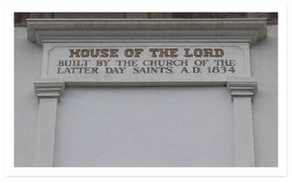
Kirtland, Ohio Temple
Four years later on April 26, 1838, the Church name was changed to “The Church of Jesus Christ of Latter Day Saints” and has remained ever since (except the hyphen was added about a century later to be grammatically correct).
Is it reasonable to assume that God would periodically change the name of his Church? If Jesus Christ is the central character of God’s religion on earth and all things are to be done in His name, is it reasonable to assume that God would instruct His Church leaders to entirely leave out the name of Jesus Christ from the period of May 3, 1834 – April 26, 1838? What possible reason could there be for the name changes?
Why would Christ instruct Joseph to name it one thing in 1830 and then change it in 1834 and then change it again in 1838? Why would the name of Christ be dropped from His one and only true Church for 4 whole years?
What does this say about a Church that claims to be restored and guided by modern revelation? If the Prophet Joseph Smith couldn’t even get the name right for eight years then what else did he get wrong?
-
-
Anti-Intellectualism:
“Some things that are true are not very useful”:
-
Boyd K. Packer gave an eye-opening talk to Church Education System Instructors and faculty at a CES Symposium on the Doctrine & Covenants and Church History on August 22, 1981 entitled The Mantle is Far, Far Greater Than the Intellect.
-
-
Packer said the following:
“There is a temptation for the writer or the teacher of Church history to want to tell everything, whether it is worthy or faith promoting or not. Some things that are true are not very useful.”
Joseph using a rock in a hat instead of the gold plates to translate the Book of Mormon is not a useful truth? The fact that there are multiple conflicting First Vision accounts is not a useful truth? The fact that Joseph Smith was involved in Polyandry when D&C 132:61 condemns it as “adultery” is not a useful truth?
He continues:
“That historian or scholar who delights in pointing out the weaknesses and frailties of present or past leaders destroys faith. A destroyer of faith – particularly one within the Church, and more particularly one who is employed specifically to build faith – places himself in great spiritual jeopardy.”
Right, because being honest to members about Joseph’s “weaknesses and frailties” of secretly marrying other men’s wives while denying and lying about it to everyone for 10+ years just might destroy faith. But let’s not teach this historical fact because “some things that are true are not very useful.”
What’s interesting about Packer’s above quote is that he’s focusing on history from the point of view that a historian is only interested in the “weaknesses and frailties of present and past leaders.” Historians are also interested in things like how the Book of Mormon got translated or how many accounts Joseph gave about the foundational First Vision or whether the Book of Abraham even matches the papyri and facsimiles.
Besides, it matters in the religious context what past and present leaders “weaknesses and frailties” are. If Joseph’s public position was that adultery and polygamy are morally wrong and condemned by God, what does it say about him and his character that he did exactly that in the dark while lying to Emma and everyone else about it? How is this not a useful truth? A relevant hypothetical example: President Monson gets caught with child pornography on his hard drive. This matters, especially in light of his current position, status, and teachings on morality. Just
because a leader wears a religious hat does not follow that they’re exempt from history and accountability from others.
The question should not be whether it’s faith promoting or not to share ugly but truthful facts. The question should be: Is the right thing to do? Is it the honest thing to do?
Criticizing leaders:
- Dallin H. Oaks made the following disturbing comment in the PBS documentary, “The Mormons” (0:51):
“It is wrong to criticize the leaders of the Church, even if the criticism is true.” Researching “unapproved” materials on the internet:
- Elder Quentin L. Cook made the following comment in the October 2012 Conference:
“Some have immersed themselves in internet materials that magnify, exaggerate, and in some cases invent shortcomings of early Church leaders. Then they draw incorrect conclusions that can affect testimony. Any who have made these choices can repent and be spiritually renewed.”
- Elder Dieter Uchtdorf said the following in his CES talk “What is truth” (33:00):
“…Remember that in this age of information there are many who create doubt about anything and everything at any time and every place. You will find even those who still claim that they have evidence that the earth is flat. That the moon is a hologram. It looks like it a little bit. And that certain movie stars are really aliens from another planet. And it is always good to keep in mind just because something is printed on paper, appears on the internet, is frequently repeated or has a powerful group of followers doesn't make it true.”
Who cares whether you received the information from a stranger, television, book, magazine, comic book, napkin, and even the scary internet? They’re all mediums or conduits of information. It’s the information itself, its accuracy, and its relevance that you need to focus on and be concerned with.
With all this talk from General Authorities against the scary internet and daring to be balanced by looking at what both defenders and critics are saying about the Church, it is as if questioning and researching and doubting is now the new pornography.
Truth has no fear of the light. President George A. Smith said, “If a faith will not bear
to be investigated; if its preachers and professors are afraid to have it examined, their foundation must be very weak.”
Under Cook’s counsel, FairMormon and unofficial LDS apologetic websites are anti- Mormon sources that should be avoided. Not only do they introduce to Mormons “internet materials that magnify, exaggerate, and in some cases invent shortcoming of early Church leaders” but they provide many ridiculous answers with logical fallacies and omissions while leaving members confused and hanging with a bizarre version of Mormonism.
What about the disturbing information about early Church leaders and the Church which are not magnified, or exaggerated, or invented? What about the disturbing facts that didn’t come from the flat-earthers or moon-hologramers but instead from the Church itself? Are those facts invalid when someone discovers them on the scary internet? What happens when a member comes across Elder Russell M. Nelson’s obscure 1992 talk or the Church’s new December 2013 Book of Mormon Translation essay where they learn – for the first time in their lives – that the Book of Mormon was not translated as depicted in Sunday Schools, Ensigns, MTC, General Conference addresses, or Visitor Centers? Is this member in need of repentance when he’s troubled by this inconsistency and deception? Is it the member’s fault for discovering the Book of Mormon translation deception still perpetuated by the Church? Why is the member required to repent for coming to the conclusion that something is very wrong?
Most of the information I discovered and confirmed online about the Church is found from Church friendly sources. I confirmed Joseph’s polygamy/polyandry from LDS- owned FamilySearch.org. I confirmed Adam-God theory and other doctrines taught by Brigham Young from the Journal of Discourses. I confirmed Nelson’s rock in the hat endorsement from his 1992 talk buried on LDS.org. Even reading the scriptures and seeing all its problems can cause members to question and doubt. If it wasn’t for the internet, I’d still find the information from physical books. Like the internet, books contain positive and negative as well as true and false information about the Church and everything else on earth. Are physical books to be avoided as well?
“And it is always good to keep in mind just because something is printed on paper, appears on the internet, is frequently repeated or has a powerful group of followers doesn't make it true.” The exact same thing can be said of Mormonism and LDS.org.
Going after members who publish or share their questions, concerns, and doubts:
- September Six:
“The September Six were six members of The Church of Jesus Christ of Latter-day Saints who were excommunicated or disfellowshipped by the LDS in September 1993, allegedly for publishing scholarly work on Mormonism or critiquing Church doctrine or leadership.”
A few months before the September Six, Boyd K. Packer made the following comment regarding the three “enemies” of the Church:
“The dangers I speak of come from the gay-lesbian movement, the feminist movement (both of which are relatively new), and the ever- present challenge from the so-called scholars or intellectuals.”
– Boyd K. Packer, All-Church Coordinating Council, May 18, 1993
- Strengthening the Church Members Committee (SCMC):
The spying and monitoring arm of the Church. It is secretive and most members have been unaware of its existence since its creation in 1985 after President Ezra Taft Benson took over. Elder Jeffrey R. Holland admitted it still exists (2:29) in March 2012. The historical evidence and the September Six points to SCMC’s primary mission being to hunt and expose intellectuals and/or disaffected members who are influencing other members to think and question, despite Holland’s claim that it’s a committee primarily to fight against polygamy.
“When the prophet speaks the debate is over”:
- N. Eldon Tanner, 1st Counselor in the First Presidency, gave a First Presidency Message in the August 1979 Ensign that includes the following statement:
“When the prophet speaks the debate is over.”
Some things that are true are not very useful + It is wrong to criticize leaders of the Church, even if the criticism is true + Spying and monitoring on members + Intellectuals are dangerous + When the prophet speaks the debate is over + Obedience is the First Law of Heaven = Policies and practices you’d expect to find in a totalitarian system such as North Korea or George Orwell’s 1984; not from the gospel of Jesus Christ.
As a believing member, I was deeply offended by the accusation that the Church was a cult. “How can it be a cult when we’re good people who are following Christ, focusing on family, and doing good works in and out of a church that bears His name? When we’re 14 million members? What a ridiculous accusation.” It was only after I lost my testimony
and discovering, for the first time, the SCMC and the anti-intellectualism going on behind the scenes that I could clearly see the above cultish aspects of the Church and why people came to the conclusion that Mormonism is a cult.
Conclusion:
“Mormonism, as it is called, must stand or fall on the story of Joseph Smith. He was either a Prophet of God, divinely called, properly appointed and commissioned or he was one of the biggest frauds this world has ever seen. There is no middle ground. If Joseph was a deceiver, who willfully attempted to mislead people, then he should be exposed, his claims should be refuted, and his doctrines shown to be false...”
– President Joseph Fielding Smith –
When I first discovered that Joseph Smith used a rock in a hat to translate the Book of Mormon, that he was married to 11 other men's wives, and that the Book of Abraham has absolutely nothing to do with the papyri or facsimiles...I went into a panic. I desperately needed answers and I needed them 3 hours ago. Among the first sources I looked to for answers were official Church sources such as Mormon.org and LDS.org. I couldn’t find them.
I then went to FairMormon and Neal A. Maxwell Institute (formerly FARMS).
FairMormon and these unofficial apologists have done more to destroy my testimony than any anti- Mormon source ever could. I found their version of Mormonism to be alien and foreign to the Chapel Mormonism that I grew up in attending Church, Seminary, reading Scriptures, General Conferences, EFY, mission, and BYU. Their answers are not only contradictory to the scriptures and teachings I learned through correlated Mormonism…they're truly bizarre.
I was amazed to learn that, according to these unofficial apologists, translate doesn't really mean translate, horses aren't really horses (they're tapirs), chariots aren’t really chariots (since tapirs can’t pull chariots without wheels), steel isn't really steel, Hill Cumorah isn't really in New York (it's possibly in Mesoamerica), Lamanites aren't really the principal ancestors of the Native American Indians, marriage isn't really marriage (if they're Joseph's marriages? They're just mostly non-sexual spiritual sealings), and prophets aren't really prophets (only when they’re heretics teaching today’s false doctrine).
Why is it that I had to first discover all of this – from the internet – at 31-years-old after 20 years of high activity in the Church? I wasn't just a seat warmer at Church. I’ve read the scriptures several times. I've read hundreds of "approved" Church books. I was an extremely dedicated missionary who voluntarily asked to stay longer in the mission field. I was very interested in and dedicated to the gospel.
How am I supposed to feel about learning about these disturbing facts at 31-years-old? After making critical life decisions based on trust and faith that the Church was telling me the complete truth about its origins and history? After many books, Seminary, EFY, Church history tour, mission, BYU, General Conferences, Scriptures, Ensigns, and regular Church attendance?
So, putting aside the absolute shock and feeling of betrayal in learning about all of this information that has been kept concealed and hidden from me by the Church my entire life, I am now expected to go back to the drawing board. Somehow, I'm supposed to rebuild my testimony on newly
discovered information that is not only bizarre and alien to the Chapel Mormonism I had a testimony of; it’s almost comical.
I'm now supposed to believe that Joseph has the credibility of translating ancient records when the Book of Abraham and the Kinderhook Plates destroy this claim? That Joseph has the character and integrity to take him at his word after seeing his deliberate deception in hiding and denying polygamy and polyandry for at least 10 years of his adult life? How he backdated and retrofitted the Aaronic and Melchizedek Priesthood restoration events as if they were in the Book of Commandments all along? And I'm supposed to believe with a straight face that Joseph using a rock in a hat is totally legit? Despite this being the exact same method he used to con people out of their money during his treasure hunting days? Despite this ruining the official story of ancient prophets and Moroni investing all that time and effort into gold plates, which were not used because Joseph’s face was stuffed in a hat?
I'm supposed to sweep under the rug the inconsistent and contradictory First Vision accounts and just believe anyway? I'm supposed to believe that these men who have been wrong about so many important things and who have not prophesied, seered, or revealed much in the last 169 or so years are to be sustained as "prophets, seers, and revelators"?
I’m supposed to believe the scriptures have credibility after endorsing so much rampant immorality, violence, and despicable behavior? When it says that the earth is only 7,000 years old and that there was no death before then? Or that Heavenly Father is sitting on a throne with an erect penis when all evidence points to it really being the pagan Egyptian god of sex, Min? The “most correct book on earth” Book of Mormon going through over 100,000 changes over the years? After going through so many revisions and still being incorrect? Noah’s ark and the global flood are literal events? Tower of Babel is a literal event? The Book of Mormon containing 1769 King James Version edition translation errors and 1611 King James Version translators’ italics while claiming to be an ancient record?
That there’s actually a polygamous god who revealed a Warren Jeffs style revelation on polygamy that Joseph pointed to as a perverted license to secretly marry other living men’s wives and teenage girls barely out of puberty? That this crazy god actually threatened Joseph’s life with one of his angels with a sword if a newly married pregnant woman didn’t agree to Joseph’s marriage proposal? And like the part-time racist schizophrenic god, I’m supposed to believe in a god who was against polygamy before he was for polygamy but decided in 1890 that he was again against it?
I’m told to put these foundational problems on the shelf and wait until I die to get answers? To stop looking at the Church intellectually even though the “glory of God is intelligence”? Ignore and have faith anyway?
I’m sorry, but faith is believing and hoping when there is little evidence for or against something. Delusion is believing when there is an abundance of evidence against something. To me, it’s absolute insanity to bet my life, my precious time, my money, my heart, and my mind into an organization that has so many serious problematic challenges to its foundational truth claims.
There are just way too many problems. We’re not just talking about one issue here. We’re talking about dozens of serious issues that undermine the very foundation of the LDS Church and its truth claims.
The past year was the worst year of my life. I experienced a betrayal, loss, and sadness unlike anything I’ve ever known. “Do what is right; let the consequence follow” now holds a completely different meaning for me. I desperately searched for answers to all of the problems. To me, the answer eventually came but it was not what I expected…or hoped for.
As a child, it seemed so simple; Every step was clearly marked.
Priesthood, mission, sweetheart, temple; Bright with hope I soon embarked.
But now I have become a man, And doubt the promise of the plan.
For the path is growing steeper, And a slip could mean my death. Plunging upward, ever deeper,
I can barely catch my breath.
Oh, where within this untamed wild Is the star that led me as a child?
As I crest the shadowed mountain, I embrace the endless sky;
The expanse of heaven's fountain Now unfolds before my eye.
A thousand stars shine on the land, The chart drafted by my own hand.
– The Journey –
Jeremy T. Runnells
cesletter@gmail.com www.cesletter.com
Epilogue:
Thank you for reading Letter to a CES Director. The most common question I get from my readers is: “Did the CES Director respond?” Unfortunately, the CES Director never responded despite having read my “very well written letter” and stating that he would be providing a response.
In the fall of 2013, unofficial Mormon apologetic group FairMormon released an analysis of Letter to a CES Director.
In response, I published Debunking FAIR’s Debunking.
Click on the graphics below to access each respective response:

Click below to view my interview with Mormon Stories John Dehlin:
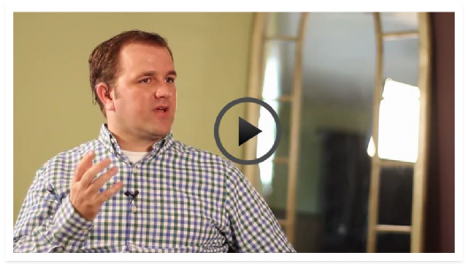